수명 열화를 하나의 수학 구조로 읽기
TFT의 \(\Delta V_{th}\) 이동과 OLED의 휘도 감쇠는 물리적 원인이 다르지만 같은 stretched exponential 형태로 나타납니다. 이 세미나는 왜 그 형태가 나오는지를 일반론에서 먼저 세우고, 시뮬레이션으로 직접 확인한 뒤, 실제 소자·재료로 내려가 학계 연구 이력을 짚고, 마지막에 사내 수명 분석 도구로 연결합니다.
SE 식은 어디서 오는가 — 모양·온도·응력의 분리
특정 소자를 보기 전에 수식부터 세웁니다. 여러 속도의 통계적 중첩이 stretched exponential을 만들고, 온도(Arrhenius)와 응력(멱법칙)이 시간척도 \(\tau\) 안으로 흡수되며, 한 소자의 열화곡선과 여러 소자의 수명 산포가 Weibull로 연결됩니다. 중간에 사내 OLED 자동 수명 분석 사이트가 이 계산을 어디까지 대신하는지 확인합니다.
왜 이 수식들인가 — SE(모양)·아레니우스(온도)·멱법칙(응력)의 통합
TFT 소자의 \(\Delta V_{th}\) 열화도, 유기 EL의 휘도 열화도 stretched exponential(SE, Kohlrausch–Williams–Watts)을 기본으로 쓴다. 우연이 아니라, 자연에서 이 형태를 낳는 공통 수학 구조가 있기 때문이다. 핵심은 열화를 속도(rate) 과정으로 보고 시간 모양(β)과 시간 스케일(τ)을 분리하는 것이다. 모든 응력 법칙은 τ 안으로 들어간다.
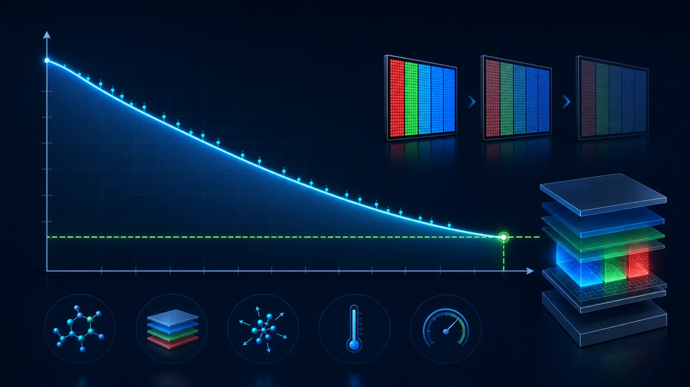
A. 왜 자연은 stretched exponential을 쓰는가
실제 OLED 열화는 하나의 원인으로만 진행되지 않는다. 어떤 결함은 빠르게 생기고, 어떤 계면 변화는 천천히 진행되며, 어떤 재료 열화는 장시간에 걸쳐 나타난다. 이렇게 속도가 다른 여러 열화 과정이 동시에 섞이면, 전체 휘도는 단순한 한 개의 지수곡선이 아니라 더 완만하게 휘어진 stretched exponential 형태로 보인다.
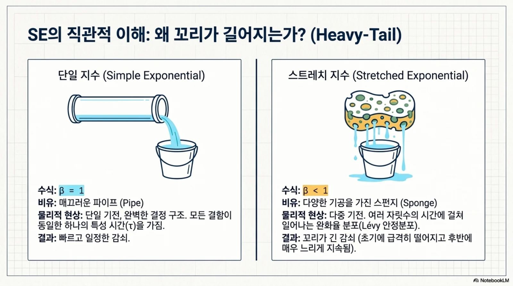
위 수식은 “여러 개의 단순 감쇠곡선을 가중평균하면 하나의 SED 곡선처럼 보인다”는 뜻이다. 따라서 β는 열화 원인이 얼마나 넓게 퍼져 있는지를 나타내는 모양 계수로 해석할 수 있다. β가 1에 가까우면 비교적 한 가지 시간상수가 지배하고, β가 작아질수록 빠른 열화와 느린 열화가 넓게 섞인 상태로 볼 수 있다. 비정질 Si, 유기반도체, 유리처럼 무질서한 재료에서 SED가 자주 나타나는 이유도 여기에 있다.[3]
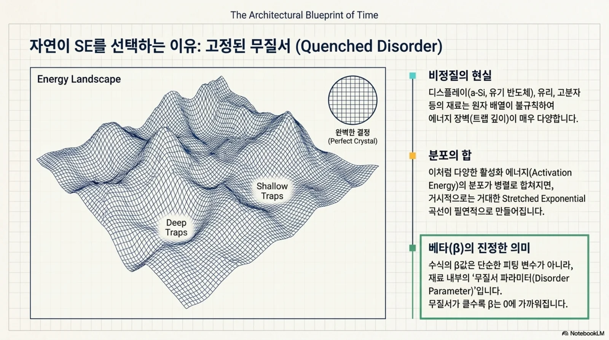
SED는 “열화 원인이 하나가 아니다”라는 신호다. β는 그 복잡도를 한 숫자로 압축한 값이다. 그래서 β를 단순 fitting 계수로만 보지 말고, 재료·계면·구조 열화가 얼마나 섞였는지 보는 힌트로 사용해야 한다.
| 경로 | 기전 | β의 의미 |
|---|---|---|
| 완화시간 분포 중첩 | 병렬 감쇠 채널 + heavy-tailed rate 분포(Lévy) | 분포 폭(무질서) |
| 분산 수송 (Scher–Montroll) | band-tail 국재상태 hopping/multiple-trapping | \(\beta\approx k_BT/E_0=T/T_0\) |
| 계층적 구속 완화 | 빠른 자유도가 풀려야 느린 자유도가 완화 | 구속 위계의 폭 |
| 무작위 trap 확산 (Donsker–Varadhan) | 수분/산소·결함의 반응자리 확산 | \(\beta=d/(d+2)\) (3D=0.6) |
| 장벽 분포 결함반응 | exciton–polaron 결함생성, 결합파괴 | 활성화에너지 분포 폭 |
신뢰성의 Weibull 신뢰도가 곧 SE의 생존형이다: \( R(t)=\exp[-(t/\tau)^\beta] \), β=Weibull 형상모수. 물리(KWW 완화)와 통계(고장분포)가 같은 식에서 만난다. β<1=초기고장/넓은 결함분포, β=1=무작위(무기억), β>1=wear-out(단일 지배 마모).
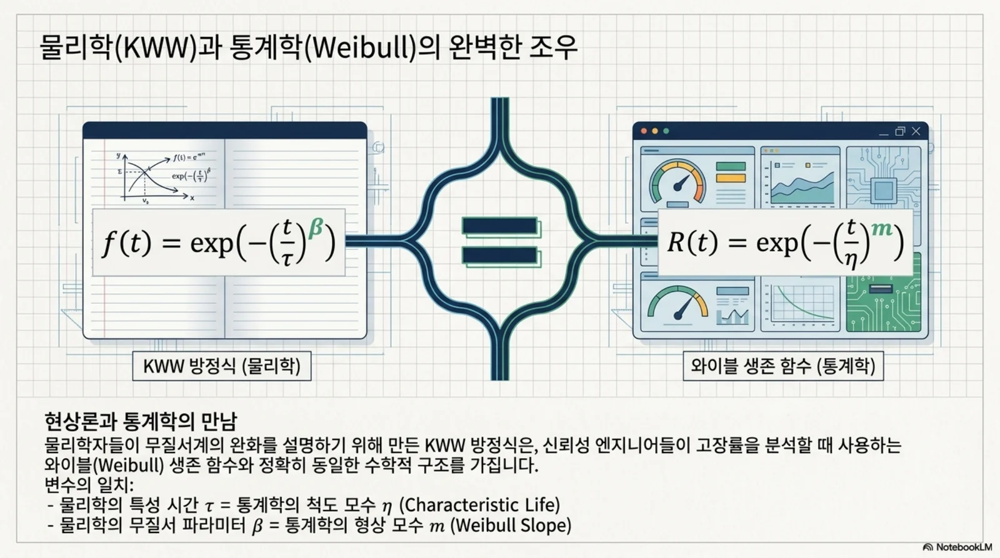
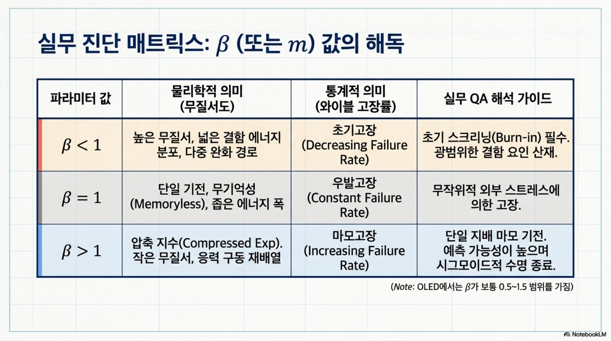
B. 온도 = 아레니우스 (지수형은 통계역학의 필연)
열에너지는 볼츠만 분포를 따르고, 장벽 이상의 에너지를 가진 요동 비율이 정확히 \(e^{-E_a/k_BT}\)(전이상태이론/Kramers). 온도는 에너지에 켤레인 유일한 변수라 장벽 넘기 확률에 지수적으로 들어갈 수밖에 없다 — 회피 불가능한 통계역학. 그래서 온도만 아레니우스(지수)형이다.
C. 전압·전류·힘 = 멱법칙 (세 가지 근원)
① 반응 차수 (OLED 직결)
여기자 밀도 ∝ J. 결함생성이 exciton–polaron(이분자)이면 속도 ∝ J², 단분자면 ∝ J¹. 따라서 \(1/\tau\propto J^{\,n}\), 지수 n = 구동량의 반응 차수. coulombic 열화 n≈1.5~2.
② 척도불변 역학 (기계 피로)
선형 탄성엔 고유 스케일이 없다. \(K\propto\sigma\sqrt a\), Paris \(da/dN\propto\Delta K^m\), Coffin–Manson \(N_f\propto(\Delta\varepsilon)^{-n}\). 멱법칙=자기유사(scale-free) 응답의 지문.
③ 로그형 장벽저하 (Eyring)
\(k=\nu\exp[-(E_a-b\,g(S))/k_BT]\). \(g(S)=S\)면 지수형(TDDB E-model), \(g(S)=\ln S\)면 멱법칙 \(k\propto S^{b/k_BT}\). Black EM \(\text{MTTF}=A\,J^{-n}e^{E_a/k_BT}\).
전류·기계 피로는 멱법칙이 견고하지만, 전압은 기전에 따라 멱법칙(inverse power law)일 수도, 지수형(E-model \(e^{\gamma E}\), \(1/E\)-model \(e^{G/E}\))일 수도 있다. “멱이냐 지수냐”가 곧 기전 판별 포인트다.
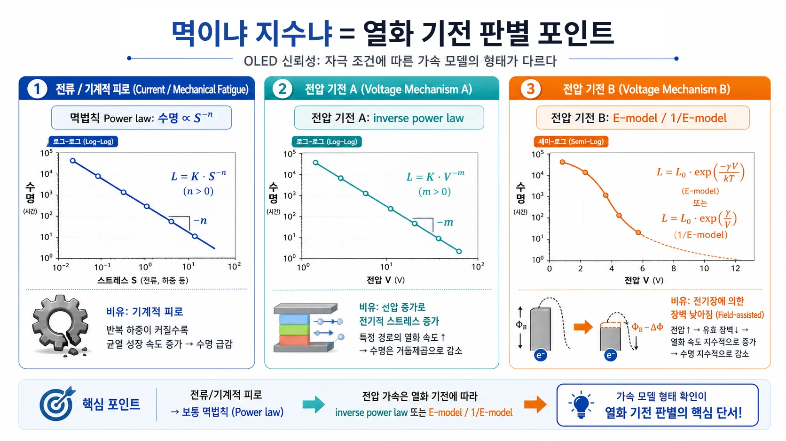
D. 통합 — 하나의 rate, τ(T,S)
결정적 연결: Arrhenius는 활성화에너지를 국부 반응속도로 바꾸고, SE는 그 속도분포 전체를 시간영역에서 관측한 결과다. 단일 장벽이면 단일 τ → 단순 지수(β=1). 장벽 분포 \(p(E_a)\)면
• β ← 완화시간·속도 분포의 전체 형태와 폭을 압축한 모양계수이며 단순히 분산과 같지는 않음
• τ의 아레니우스 ← 같은 기전 안에서 온도가 대표 시간척도를 이동시키는 관계
• τ의 멱법칙 ← 반응 차수·척도불변 역학(전압·전류·힘)이 평균 rate를 밀어냄
가속시험은 이 τ를 측정한다:
ln τ vs 1/T 기울기 → \(E_a\), ln τ vs ln S 기울기 → n(반응 차수). 가속수명 모델링의 근거다.[4]
응력·온도를 바꿔도 β와 정규화 곡선이 함께 유지되면 같은 열화 기전이라는 가설을 지지한다. β가 꺾이면 기전 전환 가능성이 크므로 그 구간 외삽을 중단한다. SE가 잘 맞는다는 사실만으로 기전을 특정할 수 없으므로 β·τ의 온도·응력 의존성, 잔차, 분광·전기·구조 분석으로 교차검증해야 한다.
열화는 장벽 분포를 가진 rate 과정이다. 완화 스펙트럼의 형태와 폭이 SE의 β에 반영되고, 장벽과 온도가 τ의 Arrhenius 이동을, 구동량의 반응 차수·척도불변성이 τ의 멱법칙 이동을 만든다.
가속수명: 온도는 Arrhenius, 전류/전압은 Power Law로 본다
OLED 수명 평가는 단순 시간 fitting만으로 끝나지 않는다. 고온·고전류·고휘도 조건에서 얻은 열화 데이터를 상온 사용 조건으로 환산해야 한다.
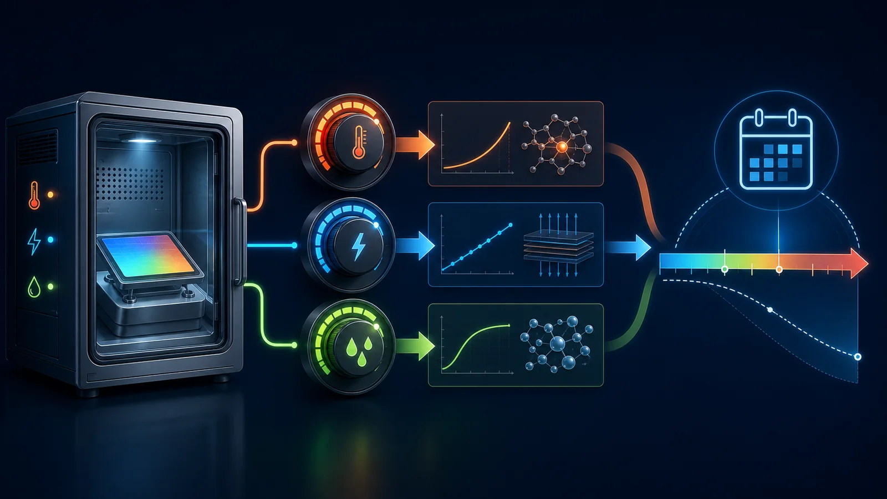
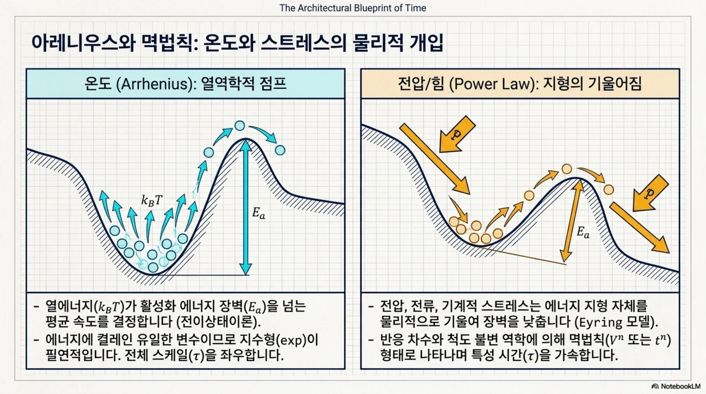
온도 가속: Arrhenius
온도는 유기재료 반응속도, 확산, 계면 열화와 연결되므로 활성화에너지 기반 Arrhenius 식으로 다룬다.
전류밀도 가속: Inverse Power Law
전류밀도 증가에 따른 exciton, polaron, Joule heating 스트레스는 power exponent n으로 표현한다.
접합부 온도 보정
챔버 온도는 실제 소자 온도가 아니다. 고전류 구동에서는 픽셀 접합부 온도 상승을 보정하지 않으면 수명 가속계수가 왜곡된다.
여기서부터는 사이트가 대신 계산한다 — OLED 자동 수명 분석
앞의 SE 적합과 가속 환산은 실제로 손으로 풀지 않습니다. 사내 OLED 자동 수명 분석 사이트가 측정 원본에서 정규화·cutoff·SED 적합까지 자동으로 수행하고, 그 결과를 \(\beta\)와 수명 산포로 내놓습니다. 다음 절의 Weibull은 바로 그 출력을 읽는 언어입니다.
사이트가 자동으로 내는 값
- 휘도·전류 proxy·효율 유지율
- overshoot 구간과 cutoff 시점
- SED 적합 파라미터 \(\beta,\ \theta\)
- L93과 샘플별 수명 산포
그래서 Weibull이 필요하다
사이트는 샘플마다 수명을 하나씩 내놓습니다. 그런데 품질 판정에 쓰는 값은 평균이 아니라 하위 tail입니다. 여러 샘플의 수명이 어떻게 흩어져 있는지, 몇 %가 먼저 떨어지는지를 읽으려면 Weibull 분포와 \(\beta\)·B10 개념이 필요합니다.
사내망에서만 접속됩니다. 전체 실습 절차와 강의 단계별 대응은 마지막 사내 분석 환경 절에서 정리합니다.
와이블 분포는 “몇 %가 먼저 죽는가”를 보는 신뢰성 언어다
SED가 한 샘플의 휘도 열화곡선 \(L(t)\)을 설명한다면, 와이블 분포는 여러 샘플의 수명 산포를 설명한다. 그래서 OLED 수명평가에서 평균 L93만 보면 부족하고, P10/B10처럼 낮은 tail을 함께 봐야 한다.
1. 누적 고장확률과 신뢰도
\(F(t)\)는 t시간까지 고장난 비율, \(R(t)\)는 살아남은 비율이다. 여기서 \(\eta\)는 scale 또는 characteristic life이고, \(t=\eta\)일 때 약 63.2%가 고장난다.[18]
2. P10/B10의 의미
B10 또는 P10은 “10% 샘플이 이미 목표 수명 이하로 떨어지는 지점”이다. 고객 관점에서는 평균보다 B10이 더 중요하다. 평균은 좋아도 tail sample이 짧으면 field risk가 커진다.
3. β는 고장 모드를 말해준다
β < 1
초기 불량/infant failure. 시간이 갈수록 hazard가 감소한다. 제조 초기 결함, 약한 샘플이 먼저 탈락하는 상황을 의심한다.
β ≈ 1
무작위 고장. 지수분포와 같아지고 hazard가 거의 일정하다. 특정 aging 진행보다 외부 random event가 지배하는 상황에 가깝다.
β > 1
wear-out/마모 고장. 시간이 갈수록 hazard가 증가한다. 재료 열화, 계면 변화, 누적 손상이 지배하는 장수명 평가에서 자주 중요해진다.
4. Minitab식 실무 해석: β는 hazard의 모양이다
신뢰성 분석 툴에서는 와이블을 “고장시간 데이터의 표준 언어”처럼 사용한다. Minitab 설명처럼 와이블은 왼쪽/오른쪽 치우침과 대칭형 데이터를 모두 표현할 수 있고, β를 바꾸면 감소·일정·증가 hazard를 모두 나타낼 수 있다.[20]
| β 범위 | hazard 모양 | 품질 해석 | OLED 평가에서 볼 것 |
|---|---|---|---|
| \(0<\beta<1\) | 시간이 갈수록 감소 | 초기 불량, 약한 샘플 선별 | 초기 오버슈팅·초기 trap 안정화·공정 defect |
| \(\beta=1\) | 거의 일정 | 랜덤 고장, 다중 원인 | 측정 노이즈, 외란, 샘플 간 혼합 가능성 |
| \(\beta>1\) | 시간이 갈수록 증가 | wear-out, 누적 열화 | 재료 열화, 계면 변화, 전극/봉지 열화 |
| \(\beta\gg1\) | 특정 시간대 급증 | 급격한 마모 또는 임계현상 | 공통 구조 약점, 특정 split의 임계 failure 의심 |
많은 결함 후보 중 가장 약한 위치가 먼저 임계점에 도달해 고장을 만든다면 와이블이 잘 맞을 수 있다. OLED에서는 pixel, sub-pixel, 계면, 봉지 pinhole, 국부 hot spot 중 가장 약한 경로가 tail sample을 만들 수 있다는 관점으로 연결된다.
부식·수분침투·화학반응처럼 누적 반응과 확산이 강하게 섞인 경우에는 로그정규 등 다른 분포가 더 적합할 수 있다. 따라서 통합분석은 와이블 B10을 기본으로 보여주되, lognormal·비모수 percentile과 비교하는 방향으로 확장해야 한다.
5. OLED 수명평가에서의 사용법
- 각 샘플의 \(L93\), \(L95\), 또는 목표 retention crossing time을 먼저 구한다.
- 색상(W/R/G/B), split, 모델별로 수명값을 모은다.
- 와이블 또는 비모수 percentile로 P10/B10을 계산한다.
- 평균·중앙값만 보지 말고 B10, outlier, β 변화를 함께 판단한다.
- β가 조건별로 크게 달라지면 같은 기전 외삽으로 보기 어렵기 때문에 모델 추천을 보수화한다.
표본 수가 적으면 와이블 β와 B10은 매우 흔들린다. 따라서 실무에서는 “정답 수명”으로 선언하기보다, 평균 중심 판단을 tail risk 중심 판단으로 바꾸는 도구로 설명하는 것이 안전하다.
수를 넣어 확인한다 — 통계물리 시뮬레이션
앞의 유도가 말로만 맞는지, 실제로 숫자를 넣어 확인합니다. 장벽 분포의 폭을 바꾸면 β가 어떻게 움직이는지, 지수합이 언제 KWW로 근사되는지를 그래프로 봅니다.
수를 넣어 보는 Arrhenius → 속도분포 → KWW/SED
아래 실험은 “수식이 잘 맞는다”에서 멈추지 않고, 미시적 에너지 장벽이 반응속도로 바뀌고 여러 속도의 통계적 중첩이 거시적 열화곡선을 만드는 과정을 실제 숫자와 그래프로 보여줍니다.
1. 두 과정만 섞어도 단일 지수에서 벗어난다
빠른 과정 35%, 느린 과정 65%를 가정합니다.
| 시간 | 빠른 성분 | 느린 성분 | 합성 유지율 Φ(t) | 해석 |
|---|---|---|---|---|
| 0 h | 0.3500 | 0.6500 | 1.0000 | 두 성분 모두 남아 있음 |
| 10 h | 0.1573 | 0.6183 | 0.7756 | 빠른 성분이 초기 하락을 지배 |
| 50 h | 0.0064 | 0.5062 | 0.5126 | 빠른 성분은 거의 소진 |
| 100 h | 0.0001 | 0.3942 | 0.3944 | 느린 성분이 긴 tail을 형성 |
| 200 h | ≈0 | 0.2391 | 0.2391 | 후기 감쇠는 느린 장벽이 지배 |
2. Arrhenius가 에너지 지형을 속도 스펙트럼으로 바꾼다
- 시도계수 \(A=10^{11}\ \mathrm{h^{-1}}\), 평균장벽 \(\bar E=0.82\ \mathrm{eV}\)를 예시로 사용합니다.
- 장벽 \(E_i\)는 평균 주변의 Gaussian 분포를 따르며, 슬라이더의 “장벽 폭”이 커질수록 빠른 속도와 느린 속도의 비가 커집니다.
- 온도 또는 스트레스가 증가하면 속도 스펙트럼이 빨라져 곡선이 왼쪽으로 이동합니다.
- 과정 수 \(N\)은 연속분포를 얼마나 촘촘히 근사하는지를 정하고, stretch 정도는 주로 장벽분포의 폭과 형태가 결정합니다.
거시적 유지율: 지수들의 합과 KWW 적합
미시적 스펙트럼: 장벽 E → 속도 k
세로축은 log₁₀(k/h⁻¹). 같은 장벽 차이도 낮은 온도에서 더 큰 속도 차이를 만듭니다.
그래프는 \(0.08<\Phi_N(t)<0.95\) 구간을 Weibull 좌표로 변환해 직선 회귀합니다. 기울기가 \(\beta\), 절편이 \(-\beta\ln\tau\)이며, 파란 지수합과 주황 KWW 사이의 전체 차이를 RMSE로 표시합니다. 이는 시각적으로 비슷하다는 판단을 수치로 확인하기 위한 근사 적합입니다.
조절값을 바꾸면 해석이 표시됩니다.
3. 그래프를 움직이며 확인할 순서
- \(N=1,\ \sigma_E=0\): 모든 영역의 속도가 하나이므로 \(\beta\approx1\)인 단순 지수가 됩니다.
- \(N=2,\ \sigma_E=0.05\ \mathrm{eV}\): 초기에는 낮은 장벽·빠른 반응이, 후기에는 높은 장벽·느린 반응이 지배합니다.
- \(N=5\rightarrow20\rightarrow100\): 같은 장벽분포를 더 촘촘히 표본화하면서 이산 성분의 합이 연속적인 완화 스펙트럼에 접근합니다.
- \(\sigma_E\) 증가: 속도범위가 넓어지고 일반적으로 \(\beta\)가 작아지며 tail이 길어집니다.
- 온도 증가: 모든 반응이 빨라지지만 장벽마다 가속률이 달라 \(\beta\)도 변할 수 있습니다. \(\beta\)가 크게 변하면 단순 time–temperature superposition을 다시 검토합니다.
- 스트레스·\(n\) 증가: 이 예제에서는 모든 속도에 공통 \(S^n\)을 곱하므로 주로 \(\tau\)가 줄고 \(\beta\)는 거의 유지됩니다.
국부 과정 수와 속도·에너지 분포를 바꾸면서, 개별 지수완화의 합이 어떻게 매끄러운 stretched exponential 형태에 접근하는지 별도 시뮬레이터에서 비교합니다. 먼저 단일 과정과 두 과정을 확인한 뒤 과정 수를 늘리고, \(\beta\), \(\tau\), tail과 적합 오차의 변화를 관찰하세요.
4. 통계물리적으로 무엇을 보고 있는가
각 국부 영역은 서로 다른 장벽 \(E_i\)와 단순 지수완화 \(e^{-k_it}\)를 가집니다.
계측기는 개별 분자를 보지 않고 수많은 발광 중심과 열화경로의 평균 \(\sum w_i e^{-k_it}\)을 봅니다.
넓은 완화 스펙트럼을 두 파라미터로 압축한 경험식이 KWW의 \(\beta\)와 \(\tau\)입니다.
일반론에서 실제 소자로 — TFT 수명과 OLED 재료 수명
같은 SE 형태가 실제로는 어떤 물리에서 나오는지 내려갑니다. TFT의 \(\Delta V_{th}\) 열화, OLED의 휘도 열화, 그리고 시기별 양산 발광재료의 R·G·B 수명 특성으로 이어집니다.
OLED 수명과 TFT Vth 열화 — 같은 수학, 다른 물리, 하나의 패널 품질
패널의 휘도 변화는 발광소자만의 문제가 아니다. TFT가 공급하는 화소 전류와 OLED의 발광효율이 함께 시간에 따라 변하므로, 두 열화를 분리해 이해하고 다시 시스템 수준에서 결합해야 한다.
TFT 임계전압 열화
게이트 바이어스와 온도 스트레스 아래에서 전하 트래핑, 계면상태 변화 등이 누적되면 임계전압 Vth가 이동할 수 있다. 그 결과 같은 구동신호에서도 화소 전류가 달라진다.
OLED 휘도 열화
유기재료와 계면에서는 여기자–폴라론 상호작용, 결함 생성, 전하 균형 변화 등이 발광효율을 낮출 수 있다. 정규화 휘도는 흔히 stretched exponential로 표현한다.
패널 수준에서는 두 경로가 결합된다
Vth, 이동도와 화소전류 변화
내부 발광효율과 재료·계면 열화
광추출·micro-cavity·봉지구조 변화
exp[-(t/τ)β]라는 동일한 형태에서 만나며, β는 물리에서는 시간상수·장벽 분포의 폭, 통계에서는 hazard 형태와 조기고장 위험을 해석하는 연결변수가 된다.LTPS·a-IGZO TFT 열화 연구 — 수식, 연구 흐름과 적용 경계
TFT 열화는 하나의 식으로 정의되지 않습니다. 소자 구조, 전압·전류·광·온도와 구동 이력에 따라 전하 포획, 결함 생성, 산소공공 이온화, hot-carrier와 자기발열이 서로 다른 비중으로 결합됩니다.
1. 메커니즘별 주요 수식 비교
| 모델·메커니즘 | 대표 수식 | 주요 적용 | 해석과 한계 |
|---|---|---|---|
| 단일 포획·완화 | \(\Delta V_{TH}=\Delta V_\infty[1-e^{-t/\tau}]\) | 하나의 특성시간이 지배하는 기준모델 | 복수 트랩과 긴 tail을 충분히 표현하지 못한다. |
| Stretched exponential | \(\Delta V_{TH}=\Delta V_\infty[1-e^{-(t/\tau)^\beta}]\) | a-Si:H·a-IGZO·LTPS의 분산된 trapping/relaxation | \(\beta<1\)은 넓은 시간상수·장벽 분포와 연결되지만 메커니즘을 단독으로 확정하지는 못한다.[22][23] |
| Multiple SE | \(\Delta V_{TH}=\sum_i A_i[1-e^{-(t/\tau_i)^{\beta_i}}]\) | source·drain 부근의 서로 다른 국부 열화과정 | 기전 분리에 유리하지만 파라미터 수 증가에 따른 식별성과 과적합을 검증해야 한다.[27] |
| 단기 a-IGZO 모델 | \(\Delta V_{TH}=a\ln[b(V_{st}-V_{TH0})^c][1-e^{-(t/\tau)^\beta}]\) | 게이트 스트레스 전압별 초기 \(V_{TH}\) 이동 | 100초 이하 측정 데이터에서 \(R^2>0.99\). 실제 ms 영역은 직접 측정하지 않은 외삽 구간이다.[26] |
| Arrhenius 가속 | \(\tau(T)=\tau_0\exp(E_a/k_BT)\) | 온도에 따른 포획·반응 시간척도 변화 | 온도별 실험으로 동일 고장기전과 \(E_a\)를 확인해야 한다. |
| Power law·hot carrier | \(\Delta P/P_0=A(V,T)t^n\) | LTPS의 고전계·고전류 열화와 BTI/HCI 경험모델 | 지수 \(n\)은 보편상수가 아니며 소자·바이어스·관측특성별로 달라진다. |
| 자기발열 결합 | \(T_{ch}=T_{amb}+R_{th}I_DV_{DS}\) | LTPS와 a-IGZO의 current-stress 열화 | 챔버온도가 아니라 실제 채널온도를 Arrhenius·결함모델과 연결한다. |
| 히스테리시스 | \(\Delta V_{hys}=V_{TH,rev}-V_{TH,fwd}\) | sweep rate·AC stress·trapping/detrapping 평가 | 측정속도와 bias history를 고정하지 않으면 조건 간 비교가 어렵다.[25] |
2. CCS 피팅 실습 — 스트레스가 커질수록 β가 작아지는 이유
사내 CCS(Constant Current Stress) Vth 열화모델 피팅 프로그램에서 시간별 ΔVTH 데이터를 적합하고, 조건별 τ와 β가 어떻게 달라지는지 비교합니다. CCS는 전류 스트레스 시험이고 아래 서울대 연구는 게이트 스트레스 전압 시험이므로, 수치 자체를 서로 대입하지 말고 “응력이 커질 때 완화시간 분포가 어떻게 변하는가”라는 비교 관점으로 사용합니다.
Park et al.의 a-IGZO 실험에서는 스트레스 전압을 −1 V에서 6 V로 높일 때 피팅된 τ가 304.44에서 176.46으로, β가 1.02에서 0.64로 감소했습니다. 연구진은 τ와 β를 \((V_{GS}-V_{TH0})^{-1}\)에 비례해 변화시키며 모든 스트레스 전압에서 \(R^2>0.99\)를 얻었습니다.[26]
| \(V_{stress}\) | −1 V | 0 V | 1 V | 2 V | 3 V | 4 V | 5 V | 6 V |
|---|---|---|---|---|---|---|---|---|
| \(\tau\) | 304.44 | 228.42 | 204.83 | 193.33 | 186.53 | 182.03 | 178.84 | 176.46 |
| \(\beta\) | 1.02 | 0.80 | 0.73 | 0.70 | 0.68 | 0.66 | 0.65 | 0.64 |
통계물리적 해석
스트레스가 높아질수록 얕은 장벽의 빠른 trap뿐 아니라 깊은 장벽·계면·절연막의 느린 trap까지 유효하게 관여하면 포획·완화 시간상수의 분포가 넓어집니다. 단일 시간상수에서 멀어질수록 곡선이 더 stretched되고, 그 분산성을 압축한 β는 작아지는 것으로 해석할 수 있습니다.
해석의 경계
β 감소만으로 trap 종류가 늘었다고 확정할 수는 없습니다. 전계 의존 주입, 유효 장벽 변화, 짧은 측정창에서의 τ–β 공분산도 같은 현상을 만들 수 있습니다. CCS 데이터에서는 스트레스별 잔차·신뢰구간·recovery와 온도 의존성을 함께 확인해야 합니다.
3. 연도별 주요 연구 논점
| 연도 | 대표 연구 | 주요 논점 | 현재 연구로 이어진 질문 |
|---|---|---|---|
| 1993 | Libsch & Kanicki | 비정질 TFT의 전하 주입·포획이 SE 시간 의존성을 보인다는 기초 모델 정립.[22] | SE 파라미터를 트랩·장벽 분포와 어떻게 연결할 것인가? |
| 2008 | Lee et al. | InGaZnO TFT의 bias-stress 유도 \(\Delta V_{TH}\)에 SE를 적용.[23] | 재료·절연막·전계에 따라 \(\tau,\beta\)가 왜 달라지는가? |
| 2012 | Kim et al. | AC bias에서 trapping과 detrapping이 문턱전압 이동에 미치는 영향을 분석.[25] | DC 시험을 실제 프레임·duty-cycle 구동으로 어떻게 확장할 것인가? |
| 2019 | Qin et al. | AMOLED short-term image sticking의 메커니즘과 개선을 디스플레이 현상과 연결.[24] | TFT·OLED·구동회로의 잔상 기여도를 어떻게 분리할 것인가? |
| 2022 | Yang et al. | current stress에 의한 a-IGZO \(\Delta V_{TH}\)의 물리 기반 compact model 제안.[28] | 임의 파형과 과도상태를 반영하는 Verilog-A 모델을 어떻게 검증할 것인가? |
| 2023 | Park et al. | 초기 \(V_{TH0}\), 스트레스 전압과 전압별 \(\tau,\beta\)를 반영한 단기 피팅 모델 제안.[26] | 측정하지 않은 ms 영역의 외삽 정확도를 펄스 I–V로 검증할 수 있는가? |
| 2023~현재 | Multiple-SE·공정/구조 결합 | 산소 함량, \(V_{GS}/V_{DS}\), 국부 전계, activation energy와 subgap DOS를 함께 해석.[27] | 소자–화소회로–패널 화질을 잇는 재현 가능한 digital twin을 만들 수 있는가? |
4. LTPS와 a-IGZO 비교
| 구분 | LTPS TFT | a-IGZO TFT | 공통 품질 해석 |
|---|---|---|---|
| 재료·구조 특징 | 다결정 Si, 결정립계와 국부적 결함 분포 | 비정질 산화물, subgap state와 산소 관련 결함 | 공정·소자 위치에 따른 산포를 평균과 분리한다. |
| 상대적으로 중요한 열화 | grain-boundary/interface trap, HCI, BTI, self-heating | 전자 포획, 산소공공 이온화, PBIS/NBIS, 광·수소·수분 영향 | 어느 한 메커니즘만 지배한다고 단정하지 않는다. |
| 강한 스트레스 축 | 높은 횡전계, 전류, \(V_{DS}\), 채널온도 | 게이트 전계, 광, 분위기, \(V_{GS}/V_{DS}\), bias history | 전압·전류·온도·광·duty cycle을 함께 기록한다. |
| 주요 관측량 | \(\Delta V_{TH}\), 이동도, subthreshold slope, \(I_D\) | \(\Delta V_{TH}\), hysteresis, hump, 이동도, subgap DOS | 전달특성 한 개가 아니라 전기·광학·화질 결과를 결합한다. |
| 화질 영향 | 화소전류 오차, 균일도·잔상, 구동 안정성 변화 | 화소전류 이동, flicker·short-term image sticking 가능성 | OLED 효율열화와 분리한 뒤 패널 휘도 모델에서 다시 결합한다. |
| 권장 시험 | DC/AC HCI·BTI, 온도별 current stress, 구조·위치별 반복 | 펄스/AC bias, PBIS/NBIS, recovery, 온도·광·분위기 조합 | 복수 소자, holdout 조건, 잔차·CI와 외삽비를 보고한다. |
OLED 수명 열화 연구 — 같은 SE 수식에서 원인 기반 모델까지
OLED 휘도 감소와 TFT 문턱전압 이동은 미시적 원인이 다르지만, 서로 다른 속도를 가진 다수 과정이 섞인 복합계라는 공통점 때문에 동일한 stretched-exponential(SE/KWW) 완화함수를 사용할 수 있습니다. 연구의 핵심은 곡선을 잘 맞추는 데서 끝나지 않고 휘도 감소·전압 상승·전류 변화·결함과 여기자 동역학을 분리해 설명하는 것입니다.
1. 하나의 완화함수, 서로 다른 관측량
정상적으로 빛을 낼 수 있는 발광 중심·효율의 생존분율을 \(\Phi(t)\)로 표현합니다.
포획전하와 문턱전압 이동의 누적분율을 \(1-\Phi(t)\)로 표현합니다.
\(\Phi(t)=\int g(k)e^{-kt}dk\). 넓은 속도·장벽 분포가 단일 지수가 아닌 SE 형태를 만듭니다.
2. 연도별 OLED 열화모델의 발전
| 연도 | 대표 연구·모델 | 주요 논점과 수식 | 연구 한계 |
|---|---|---|---|
| 1999 | Aziz et al. — Alq₃ 화학 열화 | Alq₃로의 hole injection이 형광 양자효율을 낮추고 생성물이 quencher로 작용한다는 원인계 제시.[29] | 특정 소분자·구조의 원인 규명으로, 보편적인 시간 예측식은 제공하지 않는다. |
| 2005 | Féry et al. — SED | \(L/L_0=\exp[-(t/\tau)^\beta]\). 여러 구동조건의 휘도곡선을 간결하게 피팅하고 저휘도 수명을 외삽.[30] | \(\tau,\beta\)만으로 결함 종류를 식별하기 어렵고 전압 상승을 설명하지 못한다. |
| 2008 | Giebink et al. — 물리 기반 rate model | charge·exciton·defect 연립속도식으로 TPA/TTA와 결함 생성, 휘도 감소·전압 상승을 연결.[31] | EML만 열화, 단일 결함종, 단순 exciton 분포 등 강한 가정에 의존했다. |
| 2015 | Oh et al. — modified SED | 픽셀 사용이력과 SED 기반 열화추정을 보상전류에 연결해 AMOLED burn-in 지연을 목표로 함.[32] | 제품 보상에는 유용하지만 물질·계면의 원인 규명보다 경험적 예측에 가깝다. |
| 2017 | Kim et al. — 이변량 가속모델 | 온도와 초기휘도 두 응력을 결합해 정상 사용조건 수명을 추정하고 통계적 불확실성을 평가.[33] | 시험 범위 밖 외삽과 응력 간 상호작용 형태가 제품·구조에 따라 달라질 수 있다. |
| 2020 | Sim et al. — comprehensive model | polaron, exciton, TPA, TTA, 불순물과 EML/CTL 열화를 함께 고려해 voltage rise와 EQE loss를 설명.[34] | 많은 상태변수와 속도상수의 식별성이 낮고 일부 계면·환경 기전은 직접 증거가 제한적이다. |
| 2022 | Lee — 모델 리뷰·한계 정리 | SED 경험모델과 physics-based model을 비교하고 결함·전하·여기자 분포를 핵심 입력으로 정의.[35] | 발광방식과 재료를 초월한 보편모델, 가변전류와 스트레스 순서효과 모델이 아직 없다. |
| 2023 | 열·DC·cyclic / duty-ratio 모델 | 실사용 duty와 on/off recovery를 반영해 고정 DC용 SED의 적용범위를 확장.[36][37] | 특정 상용소자·구동범위에서 얻은 경험계수의 RGB·구조 간 전이가 보장되지 않는다. |
| 2024 | Zhao et al. — Marcus·Purcell 수명 이론 | 비복사 결함 생성과 여기자에너지의 관계를 Marcus 이론으로 해석하고 \(T\propto PF^m\)의 수명향상을 제시.[38] | 주로 blue triplet emitter·microcavity 조건이며 일반 OLED 전체에 바로 적용할 수 없다. |
| 2025 | Zhou et al. — UV photoaging SED | \(L/L_0=\exp[-(t/\tau)^\beta]\), \(T_{50}I_{UV}^{n}=C\). 전기·열 열화에 쓰던 SE를 UV 열화로 확장.[39] | 한 red OLED와 높은 UV 세기 중심이며 실제 태양광·복합환경의 스펙트럼 전이는 추가 검증이 필요하다. |
| 2026 | Lee et al. — operando EPS | 전기 임피던스와 electrically pumped spectroscopy를 결합해 EML 및 계면의 target/parasite exciton 변화를 실시간 분리.[40] | 진단·국소화의 진전이지만 장기간 수명예측식과 제품 보상모델로의 연결은 후속 과제다. |
3. 열화모델 수식 비교
| 모델 | 대표 수식 | 설명 가능한 것 | 설명하지 못하는 것 |
|---|---|---|---|
| 단일 지수 | \(L/L_0=e^{-t/\tau}\) | 하나의 지배적 열화속도 | 초기 급변과 후기 긴 tail, 복수 원인 |
| SED/KWW | \(L/L_0=e^{-(t/\tau)^\beta}\) | 분산된 열화속도를 가진 휘도곡선 | 결함의 화학적 정체, 전압 상승과 위치정보 |
| 임계수명 변환 | \(T_X=\tau[-\ln(X/100)]^{1/\beta}\) | 동일 모델에서 L95·L90·L80·L50 환산 | 실측하지 않은 임계점의 외삽 불확실성 |
| 전류·휘도 가속 | \(T_XL_0^n=C\) 또는 \(T_XJ_0^n=C\) | 고휘도·고전류 시험을 사용조건으로 환산 | 응력이 달라져 고장기전이 바뀌는 경우 |
| 온도×휘도 결합 | \(\tau=\tau_r(L_r/L_0)^n\exp[\frac{E_a}{k_B}(\frac1T-\frac1{T_r})]\) | 온도와 구동응력의 동시 가속 | 자기발열, 습도, 파형, stress sequence를 자동으로 설명하지 않음 |
| 결함 생성 rate model | \(\frac{dN_D}{dt}=k_Pn_P+k_Xn_X+k_{TPA}n_Pn_T+k_{TTA}n_T^2\) | polaron·exciton·TPA·TTA가 결함밀도를 만드는 경로 | 각 속도상수와 공간분포를 독립 측정하지 않으면 비식별성이 큼 |
| 여기자 소멸·휘도 | \(\frac{dn_T}{dt}=G-k_rn_T-k_{TTA}n_T^2-k_{TPA}n_Pn_T-k_qN_Dn_T,\ L\propto k_rn_T\) | 결함 증가가 quenching과 휘도 감소로 이어지는 과정 | 다층 계면과 비균일 재결합영역을 lumped parameter로 단순화할 위험 |
| 가변구동 누적손상 | \(D(t)=\int_0^t k[J(u),T(u)]du,\quad L/L_0=e^{-D(t)^\beta}\) | 시간에 따라 달라지는 전류·온도의 누적 dose | 순서효과와 off-time recovery가 있으면 단순 적분만으로 부족 |
| 소자군 수명분포 | \(F(T)=1-e^{-(T/\eta)^m}\) | 샘플 간 고장시간·B10/P10 산포 | 한 소자의 휘도곡선과 원인기전을 직접 설명하지 않음 |
4. OLED 수명 원인계 — 현상에서 증거까지
| 원인계 | 대표 메커니즘 | 관측 현상 | 필요한 검증 |
|---|---|---|---|
| 전하·polaron | charge trapping, radical ion 반응, polaron-induced dissociation | 전압 상승, 이동도·전하균형 변화, 효율 감소 | J–V–L, impedance, 단일캐리어 소자, trap spectroscopy |
| 여기자 | TTA, TPA/TPQ, exciton quenching, hot excited state | EQE 감소, roll-off, 휘도 저하, 결함 생성 | TRPL, transient EL, exciton-distribution sensing, operando EPS |
| 분자·화학 | bond cleavage, ligand loss, emitter/host fragmentation | 새로운 quencher·trap, 스펙트럼 변화 | LDI-TOF-MS, XPS/UPS, DFT·Marcus 분석 |
| 계면·수송층 | EML/HTL·EBL 계면 열화, injection barrier 변화 | 전압 상승, 재결합영역 이동, parasite exciton | 층별·bilayer 소자, C–V/IS, 위치별 sensing |
| 열·전기응력 | Joule heating, 고전류·고휘도, 국부 current crowding | 가속된 휘도감소, 색·전압 변화, 비균일 열화 | 실제 junction 온도, 열화상, 전류밀도·APL별 시험 |
| 환경·공정 | 수분·산소·UV, 불순물, 진공도·tact time, 봉지 손상 | 초기 급락, dark spot·shrinkage, 산화·trap 증가 | WVTR·봉지평가, controlled exposure, XPS, 공정이력 연계 |
| 광학·구조 | microcavity, Purcell effect, recombination-zone 폭, tandem | 여기자밀도와 광추출 변화, 수명·색·효율 동시 변화 | 광학모델, angle/spectrum, 층두께·stack 대조실험 |
5. 현재 연구의 공통 한계와 다음 검증
좋은 피팅만으로 TPA·TTA·계면열화 중 무엇이 원인인지 결정할 수 없습니다.
\(L(t)\)만 맞추면 전압상승, 전류·효율 변화와 TFT 영향을 놓칩니다.
짧은 관측구간에서는 \(\tau,\beta,L_0\)가 서로 보상해 장기수명이 불안정해집니다.
고온·고전류에서 다른 화학반응이 시작되면 Arrhenius·power-law 외삽이 깨집니다.
DC 시험은 APL, duty, 가변주사율, off-time recovery와 stress sequence를 재현하지 못합니다.
RGB, 형광·인광·TADF·hyperfluorescence는 여기자 수명과 취약결합이 다릅니다.
overshoot·positive aging·환경불순물의 초기 급변을 장기 열화와 분리해야 합니다.
패널 휘도에는 TFT \(V_{TH}\), 이동도, 보상회로와 광학구조가 함께 작용합니다.
평균 피팅뿐 아니라 censoring, P10/B10, bootstrap CI와 외삽비가 필요합니다.
6. 품질팀용 통합 검증 설계
- Constant-current 소자시험과 실제 화소구동 시험을 분리하고 다시 연결합니다.
- 실측 구간의 L95/L93와 외삽 L90/L80/L50을 동일한 값처럼 섞지 않습니다.
- 온도·전류·duty·off-time 순서를 바꾼 holdout 시험으로 경로의존성을 확인합니다.
- 동일 데이터에 단일지수, SE, double-SE, 물리 rate model을 적용해 잔차와 예측오차를 비교합니다.
- 최종 판정에는 휘도뿐 아니라 전압상승, 효율, 색좌표, dark spot와 소자군 하한수명을 포함합니다.
n/p‑TFT와 형광/인광 OLED를 아우르는 SE 통계물리
TFT는 전자의 n형과 정공의 p형으로, OLED 발광은 형광과 인광으로 크게 나눌 수 있습니다. 네 범주의 열화 원인은 서로 다르지만, 장벽 에너지·공간·국소환경이 균일하지 않아 반응속도가 넓게 분포한다는 점에서 같은 stretched exponential(SE) 집단응답이 나타날 수 있습니다.
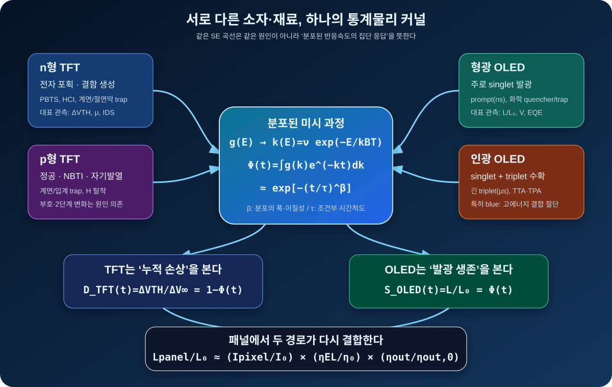
1. 네 범주의 미시 원인과 SE가 나타나는 조건
| 범주 | 주된 운반자·여기상태 | 대표 열화 원인 | SE로 보이는 이유 | SE만으로 부족한 경우 |
|---|---|---|---|---|
| n형 TFT | 전자 | 절연막·계면 전자 포획, 약한 결합의 defect creation, PBTS·HCI | trap 깊이·거리·국소 전계가 분포해 포획/탈포획 시간상수가 넓어짐.[22][23] | 국부 current stress, 두 단계 열화, 이동도·subthreshold swing까지 변하면 multiple-SE나 compact model 필요. |
| p형 TFT | 정공 | NBTI, 계면·입계 trap 생성, 수소 탈착, hot carrier·자기발열 | 입계 크기·결함 밀도·열경로가 불균일해 반응 장벽과 위치별 속도가 분산됨.[43][44] | 서로 반대 부호의 trapping이 겹치거나 hump·2단계 (V_{TH}) 이동이 나타나면 단일 SE의 물리해석이 깨짐. |
| 형광 OLED | 주로 singlet의 prompt fluorescence; 전기생성 exciton 중 triplet은 직접 발광에 제한 | 재결합영역의 화학변환, radical·deep trap·quencher, 전하불균형 | 분자 배향·국소 전계·불순물·재결합 위치가 분포해 발광 가능한 분자군의 생존시간이 넓어짐.[29][45] | 초기 positive aging, 계면 주입 변화와 emitter bleaching이 겹치면 휘도 하나로 원인을 분리할 수 없음. |
| 인광 OLED | singlet과 triplet을 수확; triplet lifetime은 대체로 더 김 | TTA·TPA/TPQ, polaron·exciton 유도 결합절단, quencher와 trap 생성 | host–dopant 주변의 여기자·polaron 밀도와 취약 결합 에너지가 분포해 결함생성 속도가 넓어짐.[31][34] | 고밀도에서 (n_T^2), (n_Tn_P) 같은 비선형 상호작용이 지배하면 rate equation이 SE 피팅보다 원인성이 높음. |
2. 같은 커널, 반대 방향의 관측량
TFT: 손상의 누적
시간이 지나며 포획·결함 상태가 채워지는 양을 봅니다. 단, ΔVTH의 부호는 n/p 이름만으로 정할 수 없고 stress와 지배 trap을 함께 봐야 합니다.
OLED: 발광의 생존
시간이 지나도 발광에 기여하는 분자·경로가 남아 있는 양을 봅니다. 동일한 Φ를 ‘채워진 손상’과 ‘남은 기능’이라는 상보적 관측으로 읽는 것입니다.
3. 패널 열화의 새로운 분해식
작은 변화 구간에서는 곱을 합으로 근사해 원인 기여도를 분리할 수 있습니다.
두 영역에서 같은 β가 나와도 같은 trap·결합절단을 뜻하지 않습니다. β는 우선 이질성의 요약값으로 해석해야 합니다.
τ는 온도·전계·전류·duty·초기상태에 조건부인 시간척도입니다. 조건이 바뀌면 동일 재료도 다른 τ를 가집니다.
ΔVTH, 전류, 휘도, 전압, EQE를 동시 측정해야 (D_{TFT})와 (D_{OLED})의 역문제를 풀 수 있습니다.
triplet 수확은 효율을 높이지만 긴 여기자 수명은 밀도를 높여 TTA·TPA 위험을 키웁니다.[42]
n/p 구분 뒤에도 gate stack, 입계, passivation, 열경로가 (g(E))를 바꾸므로 공정별 β 분포를 비교해야 합니다.
평균 장벽을 높이는 것뿐 아니라 취약한 low‑barrier tail을 제거해 (g(E))를 좁히는 것이 두 영역의 공통 신뢰성 전략입니다.
4. 이 가설을 검증하는 최소 실험
| 비교축 | 필수 조건 | 동시 측정 | 검증 질문 |
|---|---|---|---|
| n‑TFT vs p‑TFT | 동일 온도, 대응 overdrive, DC/AC duty, recovery | ΔVTH·μ·SS·IDS·소자온도 | β 차이가 carrier 극성인가, trap/입계/열구조 차이인가? |
| 형광 vs 인광 OLED | 동일 색·광자 flux 또는 전류밀도 기준을 각각 명시 | L·V·J·EQE·spectrum·transient lifetime | 긴 triplet과 bimolecular interaction이 β·가속지수에 어떤 변화를 주는가? |
| 패널 결합 | TFT-only, OLED diode, pixel/패널의 3단계 coupon | 화소전류와 (L/I) 효율을 분리 | 패널 (L(t))가 두 독립 SE의 곱인가, 결합항이 필요한가? |
| 원인 확인 | 온도·전계·duty holdout과 재료/공정 split | 전기·광학 + spectroscopy/chemical analysis | 피팅 파라미터 변화가 실제 trap·quencher 변화와 동행하는가? |
시기별 양산 발광재료와 Red·Green·Blue 수명모델 선택
공개적으로 확인되는 큰 흐름은 Red·Green 인광, Blue 형광입니다. 그러나 TADF·hyperfluorescence, blue 인광과 tandem 구조가 추가되면서 이제 수명모델은 RGB 색상만이 아니라 발광 메커니즘·stack 수·여기자 수명·구동이력까지 구분해야 합니다.
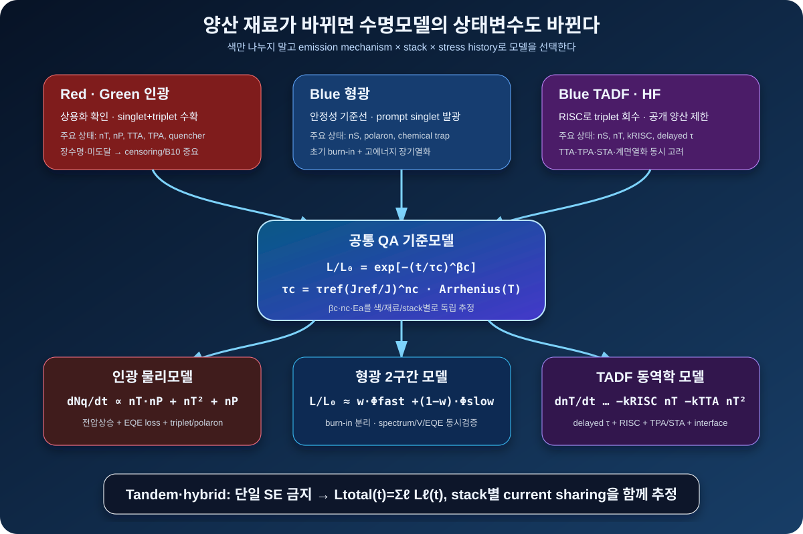
1. 시기별 연구·상용화·양산 이력
| 시기 | 공개된 재료·구조 변화 | 상용화 수준 | 수명모델에 생긴 변화 | 근거와 주의 |
|---|---|---|---|---|
| 1987 | Tang–VanSlyke의 소분자 형광 OLED | 현대 OLED 구조의 연구 출발점 | 단일/SE 휘도감쇠와 전압상승을 기본 관측으로 사용 | 초기 소자는 현재 양산 stack과 동일하지 않음.[41] |
| 1998 | Pt 계열 인광 도펀트로 singlet·triplet 에너지 수확 입증 | 인광 OLED의 연구 기반 확립 | triplet lifetime, TTA·TPA와 dopant/host 열화를 상태변수로 추가 | Baldo 등의 red 인광 실증.[42] |
| 2003 이후 | 상용 PHOLED emitter 공급; Red·Green 인광 세대 확대 | Red·Green 양산 적용이 공식 확인됨 | 장수명 색은 미도달 censoring·B10과 색별 가속지수 관리가 중요 | UDC는 2003년부터 상용 PHOLED emitter 공급을 공개했고, Samsung Display는 Red·Green 인광 상용화를 설명함.[57][56] |
| 2012 | 희소금속 없이 triplet을 RISC로 회수하는 TADF | 고효율 지연형광의 연구세대 확립 | \(k_{ISC},k_{RISC},\Delta E_{ST}\), prompt/delayed lifetime과 TTA·TPA·STA 필요 | Uoyama–Adachi의 TADF 원 논문.[58] |
| 2013–2024 | 대형 WOLED, 자동차·IT용 tandem/다중 stack 확대 | LG Display: 2013 대형 OLED, 2019 tandem 상용화, 2024 노트북 tandem 양산 | 각 stack의 열화와 current sharing을 분리하는 합성모델 필요 | 구조 양산 이력이지 특정 dopant 공개는 아님.[60] |
| 2020 | TADF/Hyperfluorescence 재료의 첫 상용 출하 사례 | WiseChip의 yellow PMOLED; blue 대량 양산 증거는 아님 | sensitizer→terminal emitter 에너지전달과 두 재료 열화를 분리 | 색과 제품군을 생략하고 “TADF 양산”으로 일반화하면 안 됨.[59] |
| 2021–2026 | QD‑OLED의 blue OLED 광원과 4→5층 Penta Tandem | 2021 이후 TV·monitor 양산; 2026 5층 구조 확대 | blue EML 다층 합성 + QD 변환효율·광학열화까지 분리 | 공식 자료는 blue 광원과 층수는 공개하지만 발광분자의 형광/TADF 세대는 명시하지 않음.[62][63] |
| 2025 | Blue 형광+인광의 hybrid two-stack | LG Display가 양산라인에서 상용화 수준 검증; 대량 출하 완료와는 구분 | \(L_B=w_F L_F+w_P L_P\)의 stack/방식별 혼합모델 필요 | 기존 안정성과 유사하면서 전력 약 15% 절감은 회사 발표 기준.[61] |
2. 모든 색에 유지할 공통 QA 기준모델
- \(\beta_c,n_c,E_{a,c}\)를 RGB 공통값으로 고정하지 않고 색×발광방식×stack 세대별로 추정합니다.
- 가속시험에서 색좌표·전압·EQE·스펙트럼·FA가 같은 고장모드를 유지할 때만 사용조건으로 환산합니다.
- SED는 비교 가능한 baseline이지, 형광·인광·TADF의 원인을 식별하는 최종 물리모델이 아닙니다.[69]
3. Red·Green 인광: SED + triplet/polaron 결함생성 모델
L, J, V, EQE, spectrum, 실제 EML 온도와 stress/recovery.
dopant polaron, TPA·TTA, host/transport-layer trap, recombination-zone 이동.
Red·Green 장수명에서 L90/L80 미도달은 right-censoring으로 보존하고 B10+CI를 보고.
인광 모델은 휘도만 맞추는 대신 quencher density로 EQE loss와 voltage rise를 동시에 설명해야 합니다. 실제 연구에서도 polaron·exciton·TPA·TTA와 불순물 효과를 결합한 rate model이 사용됐습니다.[34]
4. Blue 형광: 안정성 기준선이지만 ‘triplet 없음’은 아니다
| 모델 성분 | 가능한 물리 | 구분 데이터 | 판정 |
|---|---|---|---|
| 빠른 \(\Phi_f\) | 초기 burn-in, 전하재배치, 불순물·약한 계면 | 초기 V·L/J·spectrum, cutoff 민감도 | 안정화 전후를 하나의 장기 \(\tau\)로 강제하지 않음. |
| 느린 \(\Phi_s\) | 고에너지 excited-state 결합절단, radical·quencher 축적 | 장기 L·V·EQE, 질량분석/분광 | 색별 current acceleration과 온도 가속을 별도 추정. |
| 잔류 triplet 영향 | 전기생성 exciton 중 비발광 triplet과 polaron 상호작용 | magnetic-field effect, transient EL, current-density 의존성 | 형광이라는 이유만으로 triplet 항을 자동 제거하지 않음. |
5. Blue TADF·지연형광: SED만으로는 상태변수가 부족하다
양산 QC와 세대 간 비교를 위한 baseline. TADF 원인식으로 해석하지 않습니다.
prompt/delayed EL·PL, 온도별 \(\tau_{DF}\), roll-off, CV/impedance, recombination-zone 위치.
TPA trap, TTA·STA, hole trapping, radical-cation 반응, EML/ETL 계면열화.
도핑농도 비교에서는 인광의 TTA와 TADF의 TPA가 서로 다른 지배 열화 후보로 관찰됐고, 후속 연구에서는 TADF의 TPA 유도 trap 생성, blue PHOLED/TADF의 EML–ETL 계면 화학열화, MR‑TADF의 hole-trapping 기반 반응이 각각 확인됐습니다.[64][65][66][67] 또한 동작 소자의 triplet lifetime을 delayed-fluorescence lifetime으로 근사하는 연구는 \(n_T\)를 실제 계측과 연결할 수 있는 경로를 제시합니다.[68]
6. Hyperfluorescence·Tandem·Hybrid의 추가 항
- Hyperfluorescence는 TADF sensitizer와 terminal fluorescent emitter의 열화를 분리하고 FRET 효율 변화를 추적합니다.
- Tandem은 각 stack의 전압·전류분담과 charge-generation layer 열화를 함께 봅니다.
- Blue 형광+인광 hybrid는 고정된 가중치로 단순 합산하지 말고, 시간에 따른 발광분담과 spectrum 변화를 측정합니다.
- QD‑OLED는 blue OLED 광원 열화와 red/green QD 변환효율·광학경로 변화를 분리합니다.
7. 양산 품질팀의 모델 선택표
| 양산/후보 구조 | Baseline | 필수 challenger | 필수 metadata·계측 | 승인 조건 |
|---|---|---|---|---|
| Red·Green 인광 | 색별 SED + J/T 가속 | triplet/polaron quencher rate model | dopant/host 세대, 농도, J, V, EQE, T, spectrum | 전압상승과 EQE loss 동시 재현, 미도달 censoring 보존 |
| Blue 형광 | single-SE | cutoff+double-SE, chemical degradation | 초기 overshoot, L/J, spectrum, V, current density | 후반 holdout과 저전류 사용조건에서 예측성 유지 |
| Blue TADF/HF | SED 비교선 | RISC·TTA·TPA·STA + interface model | prompt/delayed lifetime, \(\Delta E_{ST}\), CV, EML/ETL, roll-off | \(\tau_{DF}\), EQE, V, lifetime를 한 파라미터계로 설명 |
| Tandem/hybrid | 총휘도 SED | stack별 mixture/current-sharing model | stack 수, CGL, 층별 spectrum/전압, duty, 온도 | stack 변경 후에도 가중치·열화율이 물리적으로 재현 |
| 재료방식 비공개 제품 | 색×세대 계층 SED | change-point/latent mixture | 공개되지 않은 화학명 대신 검증된 device signature | 형광/TADF를 임의 라벨링하지 않고 예측오차로 승인 |
8. 첨부 TFT 열화문서와의 최종 결합
\(\Delta V_{TH}\), trapping, HCI, NBIS와 short-term model은 전류공급 경로를 담당합니다.
인광·형광·TADF의 exciton과 quencher는 EML 효율 경로를 담당합니다.
화소전류와 \(L/I\)를 분리 측정해 TFT와 OLED 파라미터가 서로 보상하는 가짜 fit을 방지합니다.
TADF, Tandem, OCF/LEAD 구조 변화는 수명평가법도 바꾸고 있다
최근 OLED 개발은 단순히 “더 밝은 재료”를 찾는 단계에서, 발광재료·전하수송층·광추출·봉지·반사저감 구조를 함께 설계하는 방향으로 이동하고 있다. 그래서 수명평가도 기존의 단일 SED fitting 중심에서, 재료 열화와 구조 열화를 분리하고 조건별 모델을 비교하는 방식으로 확장되어야 한다.
TADF / Hyperfluorescence
TADF는 삼중항 exciton을 지연형광으로 회수해 높은 내부양자효율을 노리는 재료군이다. 최근 MR-TADF와 hyperfluorescence 연구는 색순도와 효율을 높이는 동시에 delayed lifetime, triplet-polaron quenching, exciton density가 수명에 미치는 영향을 함께 본다.[9][10]
Tandem OLED
Tandem은 발광 유닛을 적층해 같은 휘도를 더 낮은 전류밀도로 내거나 더 높은 peak brightness를 얻는 구조다. SID 발표에서는 효율 증가와 lifetime extension이 동시에 보고되지만, 중간 연결층, lateral leakage, charge balance, stack 간 색별 열화 차이가 새로운 평가 변수로 등장한다.[11][12]
OCF / LEAD
OCF/LEAD는 polarizer를 제거하거나 대체해 투과율을 높이고 소비전력·두께를 줄이는 구조다. 같은 밝기를 더 낮은 전력으로 만들 수 있어 lifetime에는 유리할 수 있지만, color filter on encapsulation, black matrix, 저반사 재료, 봉지층 변형이 장기 신뢰성 평가에 추가된다.[13][14]
TFE / 환경 신뢰성
Flexible·foldable·rollable 구조에서는 수분·산소·UV·열·기계응력이 유기재료 열화와 동시에 작동한다. 따라서 단순 luminance decay뿐 아니라 dark spot, shrinkage, delamination, edge ingress, 색좌표 이동까지 함께 추적해야 한다.[15]
수명평가법 관점에서 바뀌는 질문
| 기술 변화 | 기존 평가 질문 | 앞으로 추가해야 할 질문 | 통합분석에 넣을 포인트 |
|---|---|---|---|
| TADF / HF | LT95/LT90가 얼마나 긴가? | 효율 roll-off, exciton lifetime, delayed component가 열화곡선 형태를 바꾸는가? | 초기 overshoot, 빠른 성분/느린 성분, 전류밀도별 \(\beta\) 변화 비교 |
| Tandem | 같은 휘도에서 수명이 늘었는가? | stack별 charge balance와 intermediate connector 열화가 분리되는가? | 색별 lifetime order, voltage drift, lateral leakage 의심 flag |
| OCF / LEAD | 전력 절감으로 수명이 좋아지는가? | 저반사/CF/black matrix/encapsulation 구조가 색좌표와 shrinkage에 영향을 주는가? | 휘도 유지율 + color shift + OPR/패턴 의존성 동시 판정 |
| TFE / Foldable | 85℃/85%RH에서 버티는가? | 수분 ingress와 재료 자체 열화가 시간상수로 구별되는가? | Double SED, edge/center 비교, UV/습도/열 split matrix |
최신 재료와 구조가 들어가면 “수명 숫자 하나”보다 “왜 그런 곡선이 나왔는가”가 더 중요해진다. 앞으로의 수명평가는 LT/L93 계산을 넘어서, 재료 열화·전하 불균형·광학구조 변화·봉지 열화를 분리해 보는 모델검증 체계로 가야 한다.
강의에 반영할 연구 방향
- 모델 다중화: Single SED, Double SED, power law, Weibull/P10을 같은 데이터에 적용하고, RMSE뿐 아니라 외삽비·파라미터 안정성·물리 해석 가능성을 함께 본다.
- 구조별 metadata: TADF/HF, Tandem stack 수, OCF/LEAD 적용, TFE 구조, OPR, 패턴, 온습도, UV split을 입력 metadata로 남긴다.
- 원인분해: \(L(t)\), \(V(t)\), 색좌표 \((x,y)\), dark current, edge/center 차이를 함께 보고 재료수명과 구조/봉지 열화를 구별한다.
- 학회/표준 추적: SID·IMID 발표와 IEC/CIE 표준 변화를 주기적으로 반영해 모델추천 기준을 업데이트한다.
학계는 이 문제를 어떻게 풀어왔나
측정표준·물리모델·통계 신뢰성이 각각 어떤 경로로 발전해 지금의 수명평가법이 되었는지, 그리고 같은 수식이 분야마다 다른 이름으로 재발견된 계보를 정리합니다.
OLED 수명평가법은 측정표준, 물리모델, 통계 신뢰성이 결합되며 발전해왔다
OLED 수명평가는 단순히 “얼마나 오래 켜지는가”를 재는 시험이 아니다. 표준화된 광학 측정, 전기적 구동 조건, 열·전류 가속모델, 휘도 열화 곡선, 통계적 하한 수명 해석이 함께 결합된 신뢰성 평가 체계다.
1. 전통적인 OLED 수명평가의 출발점
전통적인 OLED 수명평가는 일정한 구동 조건에서 시간에 따른 휘도 저하를 측정하고, 초기 휘도 대비 특정 비율까지 감소하는 시간을 수명으로 정의하는 방식에서 출발했다. IEC 62341-5-3은 OLED 디스플레이 패널과 모듈의 image sticking 및 luminance lifetime 측정 방법을 다루며, 수명평가의 기본 측정 언어를 제공한다.[1] CA310과 같은 색채휘도계가 제공하는 xyY, 색좌표, 색차 해석은 CIE colorimetry 체계와 연결된다.[2]
2. 물리적 모델이 의미하는 것
OLED 열화곡선에는 stretched exponential decay, 즉 SED 모델이 널리 사용된다. SED는 단일 열화속도가 아니라 유기박막 내부의 트랩, 결함, 계면 상태, 에너지 무질서도처럼 여러 시간상수가 섞인 열화 분포를 경험적으로 표현한다.[3] 따라서 \(\theta\)는 대표 열화 시간상수, \(\beta\)는 열화속도 분포의 폭과 곡선 형태를 나타내는 계수로 해석할 수 있다.
가속수명에서는 온도 효과를 Arrhenius 관계로, 전류밀도 또는 전기적 스트레스를 inverse power law 형태로 모델링하는 접근이 많이 사용된다.[4] 이는 고온·고전류 조건에서 빠르게 얻은 데이터를 사용 조건으로 환산하기 위한 틀이다. 하지만 실제 패널에서는 챔버온도와 접합부 온도 \(T_j\), 전류 변화, 전압강하, 광추출 효율 변화가 함께 섞이므로 단순 가속계수만으로는 충분하지 않다.
3. 실무 측정·분석 흐름
실무 수명평가에서는 시간열화 데이터와 초기 광특성을 시험 식별자 기준으로 연결하고, 색상·샘플·시험조건별 휘도·전류·효율 유지율을 계산한다. 이후 열화곡선, 실측 L93, 모델 L93, 하한수명, 이상점과 외삽 위험을 구분해 해석한다.
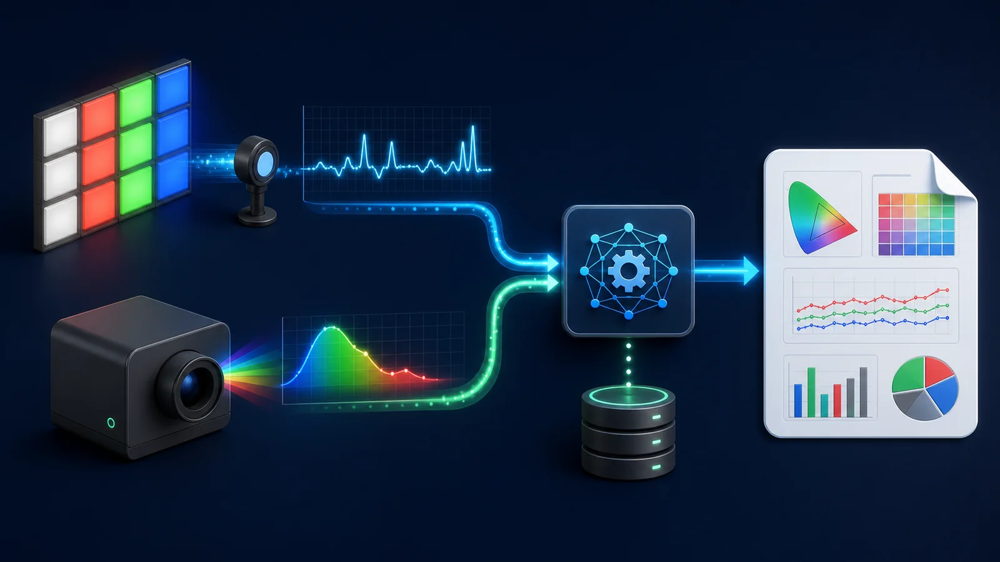
첨부된 IEC 기반 측정 매뉴얼은 측정환경, 패턴, 잔상, 오버슈팅, 전류정규화, B10 선언까지 실무 절차를 더 구체화한다. 특히 암실 stray light 관리, 표준 측정 geometry, Full Box·Window·Checkerboard 패턴, CIEDE2000 기반 잔상 정량화, Black/Dark current 추적은 수명 모델 이전에 데이터 품질을 좌우하는 항목이다.
4. 수명평가의 대표적 한계
초기 오버슈팅
Blue뿐 아니라 White, 일부 Green/Red에서도 초기 상승 후 하강이 관찰될 수 있다. 이를 열화구간에 포함하면 수명이 과대평가될 수 있다.
Cutoff 모호성
peak 시점, 하강 시작점, 일정 margin 중 무엇을 fitting 시작점으로 볼지에 따라 L93가 달라진다.
정규화 문제
휘도 저하가 소자 열화인지, 전류 변화인지, 광학 효율 변화인지 분리해야 한다.
외삽 위험
Red처럼 장수명인 색은 측정시간 안에 L93에 도달하지 않아 모델 외삽 의존도가 커진다.
통계 산포
평균값만 보면 낮은 tail sample과 P10 리스크를 놓칠 수 있다.
모델 선택
단일 모델의 RMSE만으로는 물리적 타당성, 과적합, 고객 요구사항 대응성을 판단하기 어렵다.
5. 여러 모델을 함께 비교하는 이유
통합분석은 기존 평가법을 부정하는 것이 아니라, 표준과 논문의 수명평가 언어를 측정 데이터에 연결하는 접근이다. 시간열화와 초기 광특성을 결합하고 여러 수명모델을 같은 데이터에 적용해 L93, 하한수명, 이상점, 외삽비와 모델 안정성을 함께 비교한다.
이 방법은 아직 완결된 정답이 아니다. 다양한 검증용·익명화 사례를 누적 분석하면서 재료군, 구조, 온도, 전류밀도, 고객 요구사항, 국제표준을 함께 반영해 조직의 표준 평가 방법으로 발전시켜야 한다.
Weibull 고장분포의 선행연구와 ‘같은 수식, 다른 이름’의 역사
Weibull은 갑자기 등장한 품질도구가 아닙니다. 전기완화, 분쇄입도, 재료강도, 상변태와 고장시간 연구가 거듭제곱 지수함수라는 같은 수학 문법을 서로 다른 관측량에 적용하며 발전한 결과입니다. 중요한 것은 이름보다 (x)가 무엇이고, 한 점이 무엇을 대표하는지 확인하는 것입니다.
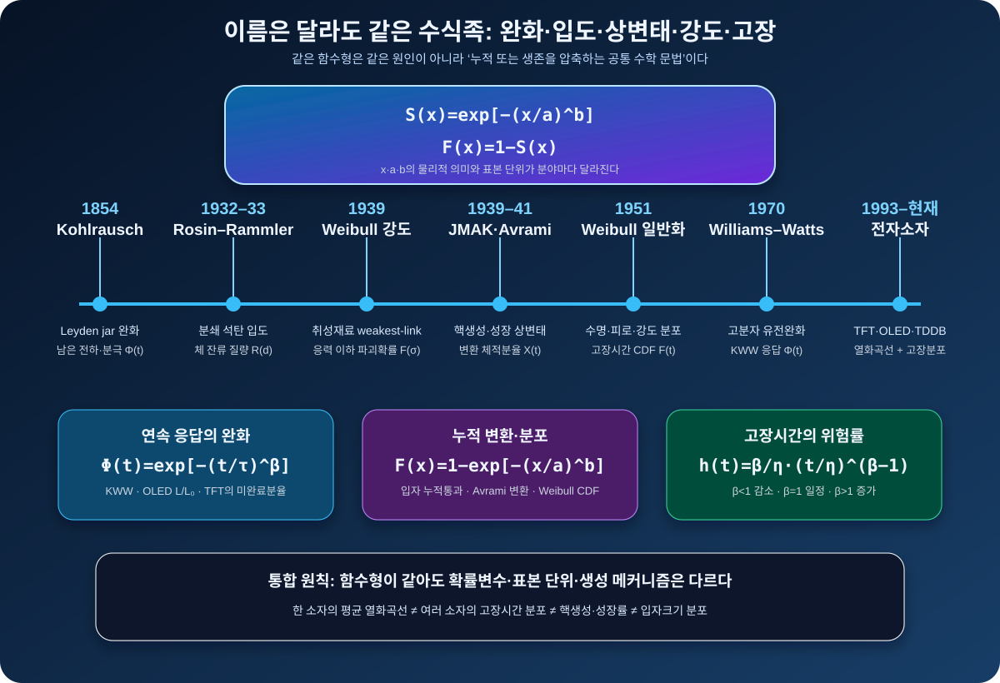
1. 연도별 연구 계보
| 연도 | 분야·명칭 | 대표 수식 | 당시의 질문 | 품질·신뢰성으로 남긴 것 |
|---|---|---|---|---|
| 1854 | Kohlrausch 완화함수 | \(\Phi(t)=e^{-(t/\tau)^\beta}\) | Leyden jar의 잔류 전하가 왜 단일 지수보다 느리게 완화되는가?[46] | 분포된 시간척도를 거시적 두 파라미터로 압축하는 출발점. |
| 1932–1933 | Rosin–Rammler–Sperling 입도분포 | \(R(d)=e^{-(d/d_0)^m}\) | 분쇄 석탄에서 크기 \(d\)보다 큰 체 잔류 질량은 얼마인가?[47] | 시간이 아닌 입자크기에도 같은 생존형을 적용. \(m\)은 입도 균일도. |
| 1939 | Weibull 재료강도 | \(P_f(\sigma)=1-e^{-(\sigma/\sigma_0)^m}\) | 취성재료에서 가장 약한 결함이 전체 파괴를 결정할 때 강도 산포를 어떻게 설명하는가?[48] | weakest-link와 크기효과를 품질의 tail 위험으로 연결. |
| 1939–1941 | JMAK·Avrami 상변태 | \(X(t)=1-e^{-(Kt)^n}\) | 핵생성과 결정성장이 진행될 때 변환 체적분율은 어떻게 증가하는가?[49] | 같은 누적형이라도 \(n\)을 성장차원·핵생성과 연결하는 기전 모델의 사례. |
| 1951 | Weibull 일반 분포 | \(F(x)=1-e^{-((x-\gamma)/\eta)^\beta}\) | 강도·피로수명·입도처럼 양의 비대칭 자료를 하나의 분포족으로 다룰 수 있는가?[50] | 형상·척도·위치모수를 가진 범용 수명분포로 확장. |
| 1970 | Williams–Watts, KWW | \(\Phi(t)=e^{-(t/\tau)^\beta}\) | 고분자 유전완화의 비대칭·비 Debye 응답을 어떻게 표현하는가?[51] | 분자운동·유리질 완화에서 SE가 널리 쓰이며 KWW라는 이름이 정착. |
| 1993–현재 | TFT·OLED·TDDB | 열화 \(\Phi(t)\), 고장 \(F(t)\) | 연속적인 성능저하와 소자군의 고장시간 산포를 어떻게 연결할 것인가? | 한 소자의 SE 열화와 여러 소자의 Weibull 고장분포를 동시에 사용하는 계층형 신뢰성 문제.[55] |
2. 같은 식에서 무엇이 달라지는가
| 이름 | \(x\)와 한 관측점의 의미 | \(S\) 또는 \(F\) | 형상모수 해석 | 직접 옮기면 안 되는 것 |
|---|---|---|---|---|
| Kohlrausch/KWW | 시간; 한 시료의 연속 완화응답 | 남은 분극·기능 \(\Phi(t)\) | 통상 \(0<\beta<1\): 완화시간의 분산 | \(\beta<1\)을 곧바로 초기고장률로 부르면 안 됨. |
| Rosin–Rammler | 입자직경; 입자군의 질량/개수 분율 | 체 위 잔류분율 \(R(d)\) | \(m\): 입도분포의 폭 | 입자 하나의 시간수명이나 hazard가 아님. |
| JMAK/Avrami | 시간; 한 재료에서 변환된 체적분율 | 누적 변환분율 \(X(t)\) | \(n\): 이상조건에서 핵생성·성장차원 | 가정 밖의 \(n\)을 공간차원으로 단정하면 안 됨. |
| Weibull 수명 | 각 개체의 고장시간·cycle·강도 | 고장 CDF \(F\), 생존 \(R\) | \(\beta\): hazard의 감소·일정·증가 | 평균 열화곡선의 점들을 독립 고장시간처럼 사용하면 안 됨. |
| OLED/TFT SE | 시간; 각 소자의 휘도·\(\Delta V_{TH}\) 연속곡선 | 기능 생존 또는 누적 손상 | \(\beta\): 이질성 후보 지표 | 피팅만으로 trap·TPA·화학반응을 식별할 수 없음. |
3. Weibull이 품질에서 강력한 이유: tail·hazard·크기효과
Bp 수명
평균이 아니라 누적 \(p\)%가 고장나는 하한수명입니다. B10은 보증·설계 여유와 직접 연결됩니다.
시간별 위험률
\(\beta<1\) 감소, \(\beta=1\) 일정, \(\beta>1\) 증가 hazard입니다. 이 해석은 고장시간 분포에만 적용합니다.
Weakest-link 크기효과
독립적인 취약 위치가 많을수록 시스템 척도수명은 \(\eta_N=\eta N^{-1/\beta}\)로 짧아집니다.
4. 숫자로 보는 동일 \(\eta\), 다른 초기 tail
세 집단의 characteristic life가 모두 \(\eta=1000\) h여도 형상모수에 따라 B10은 크게 달라집니다.
| \(\beta\) | hazard | B10 | 품질 해석 |
|---|---|---|---|
| 0.7 | 감소 | 약 40 h | 초기 취약군이 매우 긴 왼쪽 tail을 만듦. 선별·공정이력·혼합모집단 확인. |
| 1.0 | 일정 | 약 105 h | 지수분포. 시간과 무관한 우발사건 모델에 가까움. |
| 3.0 | 증가 | 약 472 h | 수명이 비교적 모이고 wear-out이 진행되는 집단. |
5. 품질 저널의 올바른 분석 절차
- 시험 전에 고장판정과 time origin을 고정하고, 미고장 샘플은 삭제하지 말고 right-censoring으로 보존합니다.
- Kaplan–Meier와 개별 점을 먼저 보고 Weibull MLE, lognormal, generalized gamma 또는 competing-risk 모델을 비교합니다.[52]
- \(\beta,\eta\), B10의 신뢰구간, 실패 수/총 표본 수, 최대 관측시간과 외삽비를 함께 보고합니다.
- 재료·Lot·고장모드가 섞이면 단일 직선보다 층별·혼합·competing-risk 모델을 우선 검토합니다.
- 가속조건에서 고장모드가 유지되는지 FA로 확인한 뒤 Arrhenius·power law와 결합합니다.
6. 연구 한계와 금지해야 할 단축
실패가 5개 미만, 때로 10개 미만이면 MLE와 \(\beta\)가 크게 흔들릴 수 있습니다.[52]
평균 \(L(t)\)의 시간점에 Weibull을 적합해도 소자군의 고장분포가 되지 않습니다.
open·short·dark spot·휘도저하를 합치면 굽은 Weibull plot이 생기고 가짜 \(\beta\)가 나옵니다.
위치모수 \(\gamma\)는 적은 표본에서 B10 외삽을 불안정하게 만들 수 있습니다.
결함 상호작용·다봉 분포·R-curve가 있으면 취성재료도 단일 Weibull에서 벗어납니다.[53]
같은 panel·glass·chamber의 subpixel은 독립이 아니므로 유효 표본수를 과대평가하면 안 됩니다.
참고문헌 및 표준
본 통합분석법은 아래 표준과 문헌을 기반으로 하되, 측정 데이터의 overshoot, cutoff, current normalization, outlier, extrapolation 문제를 해결하기 위한 운영형 검증 체계로 확장한다.
| 각주 | 자료 | 본 자료에서의 역할 |
|---|---|---|
| [1] | IEC 62341-5-3:2019, OLED displays — Measuring methods of image sticking and lifetime | OLED 패널/모듈의 image sticking 및 luminance lifetime 측정 방법의 기준. |
| [2] | CIE 15:2018 Colorimetry, 4th Edition | 색좌표, tristimulus values, colour difference 등 CA310 광색측정 해석의 기반. |
| [3] | Physical mechanism responsible for the stretched exponential decay behavior of aging OLEDs | OLED 휘도 열화곡선에 SED가 널리 쓰이는 물리적 배경. |
| [4] | Parametric lifespan models for OLEDs using design of experiments | 온도 Arrhenius, 전류 inverse power law 기반 가속수명 모델링의 참고 틀. |
| [5] | Temperature and luminance combined degradation model for OLEDs | 온도와 초기휘도/전류 조건을 함께 고려한 OLED 열화 모델 연구 흐름. |
| [6] | Lifetime extension method using modified SED model for AMOLED degradation | Modified SED를 이용한 OLED 열화 보상 및 수명 연장 연구 사례. |
| [7] | 첨부자료: OLEDIEC.pdf | IEC 기반 측정환경, 표준 패턴, 오버슈팅 cut-off, 전류정규화, B10 선언 절차를 세미나 운영 체크포인트로 반영. |
| [8] | 첨부자료: OLED_Reliability_Standard_Presentation_Slides.html | 세미나 발표 흐름, TFE/micro-cavity, Tandem/TADF, 표준 패턴, 통계 정제 내용을 보강. |
| [9] | High-Efficiency and Long-Lifetime Narrowband Green MR-TADF OLEDs, Journal of SID | MR-TADF 계열에서 색순도·효율·수명을 동시에 개선하려는 최신 재료개발 흐름. |
| [10] | The Blue Problem: OLED Stability and Degradation Mechanisms | Blue OLED/TADF의 exciton lifetime, roll-off, 안정성 문제가 수명평가 모델에 주는 의미. |
| [11] | SID 2025: Lateral-Leakage Current Reduction in Tandem RGB OLED | Tandem OLED에서 효율과 수명 향상뿐 아니라 leakage/current path 제어가 평가 항목이 되는 사례. |
| [12] | Display Week 2025 Highlights, Information Display | SID 2025에서 OLED capacitance, color gamut, polariton-coupling, reliability 이슈가 함께 다뤄지는 흐름. |
| [13] | Samsung Display OCF Leadership at MWC25 | OCF가 polarizer-less, 고휘도, 저전력, 박형화 구조로 확대되는 산업 동향. |
| [14] | Samsung Display OLED Display Technology — LEAD™ | LEAD™: polarizer 제거와 신규 panel stack을 통한 저전력·고투과 구조 설명. |
| [15] | A Review of Various Attempts on Multi-Functional Encapsulation Technologies for OLEDs | TFE/봉지 구조가 수분·산소·기계응력 신뢰성에 미치는 영향. |
| [16] | OLED-Info: Tandem architecture / IMID 2024 industry trend summary | IMID 2024 전후 polarizer-free OLED, multi-frequency driving, tandem, high-efficiency blue emitter 논의 흐름. |
| [17] | 첨부자료: First_Principles_of_Reliability.pdf | SE, Weibull, Arrhenius, Power law, β 해석, 복합 열화분해, 외삽위험을 직관적 비유와 그림으로 설명한 신뢰성 제1원리 자료. |
| [18] | NIST/SEMATECH e-Handbook of Statistical Methods — Weibull | 와이블 분포의 신뢰도 함수, 누적위험, characteristic life, shape parameter 해석의 기준 자료. |
| [19] | 사용자 제공 참고자료: 와이블 분포 설명 블로그 | 청중에게 와이블 분포를 직관적으로 설명하기 위한 추가 읽기 링크. |
| [20] | Minitab Support — 신뢰도 분석의 Weibull 분포 | β에 따른 hazard 해석, 초기고장/랜덤고장/wear-out 구분, weakest-link 모델, 실무 신뢰성 분석 관점. |
| [21] | 한국어 위키백과 — 베이불(와이블) 분포 | 확률밀도·누적분포 수식과 부품 수명 추정 및 신뢰성공학 활용을 한국어로 확인하는 보조자료. |
| [22] | Libsch & Kanicki (1993) — Bias-stress-induced stretched-exponential time dependence | 비정질 TFT 전하 주입·포획의 stretched-exponential 시간 의존성에 대한 기초 문헌. |
| [23] | Lee et al. (2008) — Threshold-voltage shift in InGaZnO TFTs | a-IGZO TFT의 bias-stress 유도 문턱전압 이동에 SE 모델을 적용한 대표 선행연구. |
| [24] | Qin et al. (2019) — AMOLED short-term image sticking | 단기 잔상 메커니즘과 디스플레이 개선 방향을 연결한 SID 연구. |
| [25] | Kim et al. (2012) — IGZO TFTs under AC bias stress | AC 바이어스에서 charge trapping/detrapping과 문턱전압 이동을 다룬 연구. |
| [26] | 박지환·강경수·박준형·이수연 (2023) — 산화물 박막 소자의 단기 열화 특성 분석 및 예측식 모델링 · DOI | 서울대학교 연구진이 초기 문턱전압, 스트레스 전압과 전압별 \(\tau,\beta\) 의존성을 반영한 a-IGZO TFT 단기 열화 모델을 제안. ms 영역은 직접 측정하지 않은 외삽임을 구분. |
| [27] | Yang et al. (2023) — Local threshold-voltage shift under current stress | multiple SE, 국부 전계, activation energy와 subgap DOS를 연결한 물리 모델. |
| [28] | Yang et al. (2022) — Physics-based compact model of a-IGZO degradation | top-gate self-aligned a-IGZO의 current-stress 문턱전압 이동 compact model. |
| [29] | Aziz et al. (1999) — Degradation mechanism of small-molecule OLEDs | Alq₃로의 hole injection과 형광 quencher 생성으로 장기 열화의 화학적 원인을 제시. |
| [30] | Féry et al. (2005) — Physical mechanism of stretched-exponential OLED aging | 여러 구동조건의 휘도 열화를 SED로 표현하고 가속곡선에서 저휘도 수명 외삽을 논의. |
| [31] | Giebink et al. (2008) — Intrinsic luminance loss due to bimolecular annihilation | charge·exciton·defect rate equation으로 PHOLED 휘도저하와 전압상승을 연결한 초기 물리 모델. |
| [32] | Oh et al. (2015) — AMOLED lifetime extension using modified SED | SED 기반 열화예측을 픽셀 보상과 연결한 제품 적용 연구. |
| [33] | Kim et al. (2017) — Bivariate lifetime model for OLEDs | 온도와 초기휘도를 결합하고 물리·통계 불확실성을 고려한 대형 OLED 수명모델. |
| [34] | Sim et al. (2020) — Comprehensive OLED degradation model | polaron·exciton·TPA·TTA·불순물과 EML/CTL 열화를 결합해 voltage rise와 EQE loss를 설명. |
| [35] | Lee (2022) — Lifetime modeling for OLEDs: review and analysis | SED와 원인 기반 수명모델의 계보, 결함·여기자분포 측정 및 실용화 한계를 종합. |
| [36] | Al Haddad et al. (2023) — Thermal, constant and cyclic electrical stress | 열·연속·주기 구동에서 OLED luminance decay를 모델링한 실사용 확장 연구. |
| [37] | Duty-ratio drive prediction model (2023) | OLED-on-silicon의 duty ratio와 off-time recovery를 반영해 DC SED의 한계를 보완. |
| [38] | Zhao et al. (2024) — Nonradiative defects in blue triplet emitters | Marcus theory와 Purcell factor를 이용해 결함생성·여기자에너지·blue PHOLED 수명을 연결. |
| [39] | Zhou et al. (2025) — OLED UV photoaging and SED model | 전기·열 열화에 사용된 SE와 power-law 가속관계를 UV 광열화로 확장. |
| [40] | Lee et al. (2026) — Operando electrically pumped spectroscopy | 전기·광학 동시 측정으로 EML 및 계면의 target/parasite exciton 열화경로를 국소화. |
| [41] | Tang & VanSlyke (1987) — Organic electroluminescent diodes | 이중 유기박막에서 전자·정공 재결합과 형광 발광을 구현한 현대 OLED의 기초 연구. |
| [42] | Baldo et al. (1998) — Highly efficient phosphorescent emission | 형광의 singlet 제한과 달리 인광 도펀트가 singlet·triplet 에너지를 함께 수확할 수 있음을 보인 기초 연구. |
| [43] | Mativenga et al. (2011) — Self-heating degradation in p-channel Si-on-glass TFTs | p형 TFT 자기발열, back-channel 전자포획과 hump 이동의 SE 시간의존성을 연결. |
| [44] | Tu et al. (2019) — NBTI in p-type LTPS TFTs of different grain sizes | 입계 크기에 따른 수소 탈착·입계/계면 trap 생성과 p형 LTPS NBTI 열화 차이를 분석. |
| [45] | Kondakov et al. (2007) — Chemical products in fluorescent and phosphorescent OLED degradation | 형광·인광 OLED의 구동 열화에서 결합절단, radical, 비복사 재결합 중심과 quencher 생성을 화학적으로 비교. |
| [46] | Kohlrausch (1854) — Theorie des elektrischen Rückstandes | Leyden jar의 비지수적 전하·분극 완화를 stretched exponential로 기술한 역사적 출발점. |
| [47] | Rosin & Rammler (1933) — The Laws Governing the Fineness of Powdered Coal | 분쇄물의 체 잔류 누적질량을 \(R(d)=\exp[-(d/d_0)^m]\) 형태로 나타낸 입도분포 연구. |
| [48] | Weibull (1939) — A Statistical Theory of the Strength of Materials | 재료의 약한 위치와 파괴확률·크기효과를 통계적으로 연결한 Weibull 강도이론의 기초. |
| [49] | Avrami (1939) — Kinetics of Phase Change I | 핵생성·성장으로 진행되는 상변태 체적분율을 거듭제곱 지수 누적함수로 정식화. |
| [50] | Weibull (1951) — A Statistical Distribution Function of Wide Applicability | 강도·피로·입도 등에 적용 가능한 위치·척도·형상모수의 범용 분포함수 제시. |
| [51] | Williams & Watts (1970) — Non-symmetrical dielectric relaxation | 고분자 유전완화의 비 Debye 응답에 SE를 적용해 KWW 함수의 현대적 사용을 확산. |
| [52] | NIST/SEMATECH — MLE for censored reliability data | failure와 censoring을 함께 사용하는 likelihood, 소표본 MLE 편향과 신뢰구간의 실무 기준. |
| [53] | Danzer et al. (2007) — Fracture statistics of ceramics | weakest-link의 전제, 다봉 결함·R-curve·소표본에서 단일 Weibull이 벗어나는 조건을 검토. |
| [54] | IEC 63287-1:2021 — Semiconductor IC reliability qualification guidelines | 반도체 IC 신뢰성 자격평가에서 Weibull 기반 표본·시험조건 설계가 여러 방법 중 하나임을 규정. |
| [55] | Mechanistic modeling of TDDB in polycrystalline thin films (2023) | 두께·전압·온도에 따른 dielectric breakdown 시간의 Weibull 분포를 결함·누설경로 모델과 연결. |
| [56] | Samsung Display — Phosphorescence | Red·Green 인광의 상용화와 blue 인광의 효율·안정성 과제를 설명한 공식 기술자료. |
| [57] | UDC (2012) — Commercial PHOLED material systems | 2003년 이후 상용 PHOLED emitter 공급과 Red·Green·Yellow 재료시스템의 공개 성능. |
| [58] | Uoyama et al. (2012) — Highly efficient OLEDs from delayed fluorescence | 작은 singlet–triplet 에너지차와 RISC를 이용해 희소금속 없이 고효율 TADF를 구현한 기초 연구. |
| [59] | Kyulux (2020) — First shipment of TADF/Hyperfluorescence materials | WiseChip yellow PMOLED용 Hyperfluorescence 재료의 상용 출하 사례. Blue 대량양산과는 구분. |
| [60] | LG Display (2024) — Tandem OLED laptop mass production | 2019 tandem 상용화와 2024 노트북용 two-stack OLED 양산, 에너지 분산에 따른 수명·성능 향상. |
| [61] | LG Display (2025) — Blue phosphorescent OLED commercialization verification | Blue 형광+인광 hybrid two-stack을 실제 양산라인에서 상용화 수준으로 검증한 공식 발표. |
| [62] | Samsung Display (2024) — QD-OLED production and shipments | 2021 이후 blue OLED 광원 기반 QD‑OLED 양산과 monitor 누적 출하 이력. |
| [63] | Samsung Display (2026) — QD-OLED Penta Tandem | Blue 유기발광층을 4층에서 5층으로 확장해 에너지 분산·효율·수명을 개선한 양산 구조. emitter 화학세대는 비공개. |
| [64] | Phosphorescent vs TADF OLED degradation (2018) | 도핑농도 의존성으로 인광의 TTA와 TADF의 TPA 지배 열화 차이를 비교. |
| [65] | Triplet-polaron-annihilation-induced TADF degradation (2022) | TPA가 electron/hole trap을 만들고 TADF OLED 수명을 제한하는 rate model과 실험 검증. |
| [66] | Direct identification of interfacial degradation in blue OLEDs (2023) | Blue PHOLED와 TADF OLED에서 EML/ETL 계면의 분자 열화를 nanoscale chemical profiling으로 확인. |
| [67] | MR-TADF degradation mechanism (2024) | hole trapping과 radical-cation의 dehydrogenative cyclization을 MR‑TADF 열화의 주요 경로로 제시. |
| [68] | Triplet lifetime in TADF OLEDs (2025) | 동작 TADF OLED의 triplet lifetime이 delayed-fluorescence lifetime으로 근사될 수 있음을 제시. |
| [69] | Miller et al. (2020) — OLED lifetime across applications | SED 휘도열화를 시간과 전류밀도의 함수로 확장해 실제 display application 수명을 계산. |
| [70] | Blue PHOLED degradation and lifetime strategy (2017) | 당시 blue PHOLED 수명이 conventional blue fluorescent OLED보다 짧았던 원인과 개선전략을 정리. |
표준은 “어떻게 측정할 것인가”를 정하고, 논문은 “어떤 모델이 가능한가”를 제시한다. 신뢰성 평가 연구는 그 둘을 연결해 “우리 데이터에서 어떤 모델을 언제 믿을 것인가”를 결정한다.
참고: IEC 62341 OLED display measurement standards, CIE photometry/colorimetry framework, OLED luminance decay stretched exponential literature, accelerated life Arrhenius/inverse power law reliability modeling, Weibull/B10 reliability analysis.
측정 데이터에서 판정까지 — 그리고 사내 도구로
실제 데이터에는 오버슈팅, cutoff, 과적합, 외삽 위험이 있습니다. 판정에 필요한 최소 수식과 검증 절차를 정리한 뒤 사내 분석 사이트로 넘어갑니다.
OLED·TFT 수명평가의 이해 순서
OLED 수명평가는 측정, 정규화, 가속모델, 열화곡선 적합과 통계적 신뢰성 판단이 연결된 문제다. 핵심 개념을 단계별로 정리한다.
| 순서 | 주제 | 핵심 질문 | 세미나 메시지 |
|---|---|---|---|
| 1 | 수명 정의 | L93/P10은 무엇을 의미하나? | 평균 수명이 아니라 품질판정에 쓸 하한 수명과 산포가 중요하다. |
| 2 | 계측 데이터 | PD와 CA310은 각각 무엇을 보나? | PD는 시간 변화, CA310은 초기 광특성과 색좌표 기준을 제공한다. |
| 3 | 효율 정규화 | 휘도 하락과 전류 변화를 어떻게 분리하나? | VBAT-XVBAT 전류 proxy로 효율 유지율을 계산해야 한다. |
| 4 | 가속수명 | 온도·전류·전압 조건을 어떻게 수명으로 환산하나? | 온도는 Arrhenius, 전류/전압 스트레스는 power law 성격으로 본다. |
| 5 | 오버슈팅 | 초기 상승을 열화 fitting에 넣어도 되나? | 초기 positive aging/TFE 변화는 cutoff 전 구간으로 분리해야 한다. |
| 6 | 모델 비교 | 기존 Blue-only 방식이 항상 맞나? | Legacy는 기준선, 4-way 모델은 편향과 과적합을 검증하는 장치다. |
수명평가 데이터: 시간열화와 초기 광특성
시간열화 데이터
시간에 따른 휘도, 전압과 전류 변화를 이용해 휘도·전류·효율 유지율을 계산한다.
초기 광특성
초기 xyY, 색좌표와 휘도 기준값을 확보하고 시간열화 데이터와 결합해 색별 변화를 추적한다.
동일한 시험조건에서 시간열화와 초기 광특성을 연결하고, 정규화와 품질확인 후 수명모델을 비교한다.
수명평가의 최소 수식
1. 휘도 유지율
2. 전류 Proxy 유지율
3. 효율 유지율
4. Stretched Exponential Decay, SED
5. L93
6. Weibull B10 신뢰수명
β는 단순한 fitting 계수가 아니라 열화 속도 분포와 관련된 형태 계수다. β, θ, cutoff는 서로 강하게 상관될 수 있으므로 단일 샘플 결과만으로 물리 결론을 내리면 안 된다.
첨부 IEC 기반 자료에서 반영할 운영 체크포인트
모델이 아무리 좋아도 입력 데이터가 흔들리면 수명 예측은 흔들린다. 따라서 통합분석법은 측정 표준 체크와 모델 검증을 함께 가져가야 한다.
| 항목 | 첨부자료 요지 | 통합분석 반영 방향 |
|---|---|---|
| 측정환경 | 암실, stray light, 온습도, 센서-패널 geometry 관리 | 측정환경 메타데이터를 manifest에 기록하고 이상조건은 report warning으로 표시 |
| 광학측정 | 9포인트/13포인트 휘도, 색도, 명암비, 균일도 | CA310 초기값과 위치별 산포를 수명 결과와 연결 |
| 표준 패턴 | Full Box, Window, Checkerboard 패턴으로 열/IR drop/차등열화 분리 | 패턴별로 모델 추천을 분리하고 서로 다른 물리 원인을 혼합하지 않음 |
| 잔상 정량화 | Gray 복귀 후 CIEDE2000 색차로 image sticking 평가 | 수명 L93와 색차/잔상 지표를 별도 KPI로 병행 관리 |
| 초기 안정화 | Pre-aging 또는 초기 cut-off로 positive aging 구간 제거 | peak가 아니라 지속 하강 시작점과 안정화 조건을 자동 산출 |
| 전류정규화 | 전압 시프트와 전류 변화가 효율 열화를 왜곡할 수 있음 | \(VBAT-XVBAT\) 기반 current proxy를 사용해 \(L_{eff}\) 계산 |
| 접합부 온도 | 챔버온도 \(T_a\)가 아니라 실제 픽셀 \(T_j\)를 고려 | \(T_j=T_a+R_{th}IV\) 보정을 가속수명 해석에 연결 |
| B10/P10 | 평균수명보다 하위 tail 신뢰수명이 품질보증에 중요 | Raw P10, clean P10, Weibull B10 후보를 함께 표시 |
측정 표준은 데이터의 신뢰도를 만들고, 분석 모델은 그 데이터를 해석하는 일관성을 만든다. 둘 중 하나만으로는 고객 대응 가능한 수명평가 체계가 되기 어렵다.
초기 오버슈팅은 “좋아진 것”이 아니라 분리해야 할 구간이다
초기 휘도 상승을 열화 곡선에 그대로 넣으면 SED의 β와 θ가 왜곡되고, L93/LT 예측이 과대평가될 수 있다.
전기적 원인
전하 주입 장벽 완화, trap filling, 초기 positive aging으로 단기 휘도 상승이 발생할 수 있다.
광학적 원인
TFE 무기막 응력 완화, 굴절률 n과 두께 d 변화가 micro-cavity 조건을 바꿔 광추출 효율을 올릴 수 있다.
분석적 처리
peak가 아니라 지속 하강 시작점을 cutoff로 잡고, cutoff 이후 구간을 실제 열화 fitting 대상으로 삼는다.
Micro-cavity 조건
| 색 | 오버슈팅 경향 | 해석 |
|---|---|---|
| Blue | 가장 큼 | 단파장이라 optical path 변화에 민감하고 기존 모델에서도 주로 고려됨. |
| White | 반복 관찰 가능 | Blue 성분과 구조 효과가 섞여 fixed-100 가정이 틀릴 수 있음. |
| Green/Red | 작지만 존재 가능 | 재료·구조·구동조건에 따라 독립 검출 필요. |
단순히 peak > 102% 같은 고정 기준만 쓰지 않고, rolling median, noise sigma, 최소 상승량, 최소 하강량, 연속 하강점을 함께 본다.
4가지 모델을 동시에 돌려 편향과 과적합을 비교한다
| 모델 | 핵심 가정 | 장점 | 주의점 |
|---|---|---|---|
| 1. legacy_shared_sed | Blue overshoot 기준 cutoff를 WRGB에 공유. β는 색별 global 고정. | 기존 방식 재현, 변경 영향도 비교에 적합. | W/R/G overshoot 또는 색별 열화 차이를 숨길 수 있음. |
| 2. pattern_cutoff_fixed_beta_sed | Sample×Color별 cutoff, Lc, τ 최적화. β는 색별 고정. | 색별 cutoff 차이를 반영하면서 자유도는 제한. | β 고정값이 재료군에 안 맞으면 편향 가능. |
| 3. pattern_cutoff_free_beta_sed | Sample×Color별 cutoff, Lc, τ, β 모두 자유. | 신규 재료·구조 변화에 적응력 높음. | 단기 데이터에서는 β/τ 상관과 외삽 위험 증가. |
| 4. double_sed | 빠른 열화와 느린 열화 2항으로 분리. | 초기/장기 메커니즘이 섞인 데이터 설명력 우수. | 파라미터가 많아 AICc/CV/식별성 검증이 필수. |
Legacy는 기준선, pattern fixed-β는 공식 challenger, free-β/double SED는 연구용 후보로 둔다. 최종 선택은 RMSE 하나가 아니라 CV, AICc, BIC, 잔차추세, 외삽비, cutoff 안정성, RGB 물리 QC를 함께 본다.
재료/구조별 모델 분리
| 구조/재료 | 추천 관점 | 추가 확인 |
|---|---|---|
| 형광/인광 단일 구조 | SED 기반 모델을 기준선으로 사용 | β global 안정성, RGB 순서 QC |
| TADF | 초기 plateau 또는 delayed degradation 가능성 확인 | Transient EL, TPA 관련 신호 |
| Tandem | CGL 계면, 다단계 열화, double SED 후보 검토 | IS/C-V-f, 구간별 slope 변화 |
| QD/무기물 기반 | Power law 또는 장기 tail 모델 검토 | 초기 급락 후 완만한 잔여 열화 |
Double SED의 연구적 의미: 빠른 성분과 느린 성분의 분해
Double SED는 단순히 RMSE를 낮추기 위한 복잡한 fitting 모델이 아니다. OLED 열화가 하나의 원인으로만 진행되지 않는다는 가정 아래, 서로 다른 시간상수를 가진 두 열화 성분을 분리해 보는 연구 도구로 사용할 수 있다.
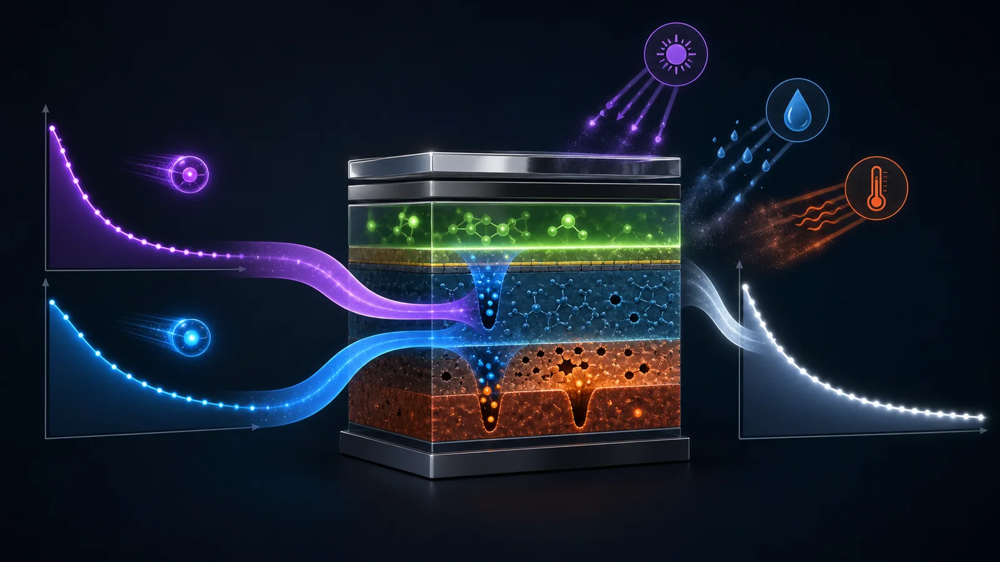
빠른 성분 후보
초기 exciton/polaron 관련 재료 열화, trap filling, 계면 안정화, 전하 주입 장벽 변화, 초기 positive aging 성분으로 해석할 수 있다.
느린 성분 후보
장기 재료 열화, 수분/산소 침투, UV·열에 의한 TFE shrinkage, micro-cavity 변화, 광추출 효율 변화 후보로 볼 수 있다.
TFT 소자 열화에서 shallow trap과 deep trap을 나누어 Vth shift를 해석하듯이, OLED에서도 Double SED를 사용해 빠른 초기 열화와 느린 장기 열화를 분리해 볼 수 있다.
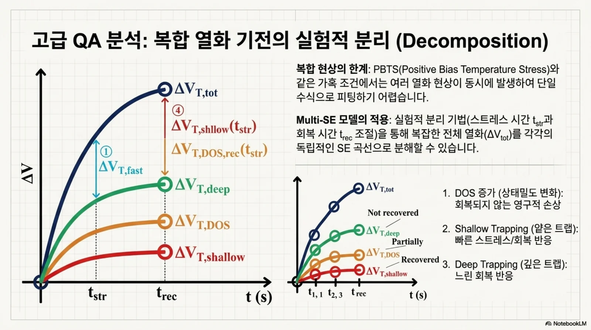
Double SED fitting만으로 \(\tau_f\)는 exciton 재료수명, \(\tau_s\)는 TFE shrinkage라고 단정하면 안 된다. 원인 확정은 전류밀도, 온도, 습도, UV, TFE 구조, 색좌표, 구동전압, EL spectrum, dark current split을 함께 검증해야 한다.
| 관찰되는 성분 | 가능한 물리 원인 | 검증 split / 보조 계측 |
|---|---|---|
| 초기 빠른 변화 | exciton/polaron 열화, trap filling, 주입 장벽 안정화 | 전류밀도, 고휘도 구동, 구동전압, 전류효율, EL spectrum |
| 장기 느린 변화 | 수분/산소 침투, UV/열, TFE shrinkage, micro-cavity shift | 고온고습, UV exposure, dark storage, TFE 구조, 색좌표, dark current |
| Blue/White 민감 변화 | 단파장 micro-cavity 민감도, Blue 재료 열화 | 색별 spectrum peak, xy shift, WRGB 독립 cutoff 비교 |
심화 모델검증: 데이터 주도 β · 물리 하한 · 외삽 검증
여러 SED 모델에서 발생할 수 있는 편향을 줄이기 위한 다섯 가지 검증 원칙이다. 핵심은 같은 수식 형태를 유지하되 파라미터와 판정을 물리적 근거에 맞추는 것이다.
1. 데이터 주도 empirical β (색상 × split)
SED에서 β와 θ는 강하게 상관된다. 짧은 데이터에서 β를 완전 자유로 두면 θ(=수명)가 흔들리고, 반대로 하드코딩 고정값(예: Blue β=0.75)이 실제 재료와 안 맞으면 수명이 통째로 편향된다. 그래서 “데이터에서 뽑은 global β + 샘플별 local θ”로 분해한다.
| 모델 | β(중앙) | L93 중앙 | 편향 | RMSE vs 참값 |
|---|---|---|---|---|
| legacy 고정 β=0.75 | 0.750 | 783 h | +7.9% | 267 h |
| free β (샘플별 자유) | 1.002 | 731 h | +0.8% | 28 h |
| double SED | 1.238 | 881 h | +21.3% | 105 h |
| empirical β (신규) | 1.002 | 733 h | +1.0% | 9 h |
2. R·G·B는 “형태 공유, 파라미터 분리”
R/G/B는 emitter 재료·구조·열화 메커니즘이 달라 β를 강제로 같게 두면 안 된다. 하지만 색마다 다른 함수식을 쓰면 비교·보고·결과 비교이 어렵다. 그래서 절충한다.
| 층위 | 공유 여부 | 이유 |
|---|---|---|
| 모델 형태 (SED) | RGB 공유 | 단일 파이프라인·동일 보고서 양식·색간 비교 → 제조/결과 비교 관리성 |
| β (stretch 지수) | 색상×split 분리 | 색별 열화 kinetics 차이 반영 → 물리 정확성 |
| θ (수명 스케일) | 샘플별 | 샘플 산포 자체가 측정 대상 |
확장: 온도/전류밀도 등 스트레스 축도 β 분리 키에 추가 가능(색상·재료·온도·전류밀도 분리 기준). 단 축을 잘게 쪼갤수록 그룹당 표본이 줄어 pooling 안정성과 상충하므로 데이터 규모로 균형을 잡는다.
3. 실측 crossing 물리 하한 (overshoot guardrail)
오버슛/cutoff 처리 뒤에도 모델이 실측보다 이르게 죽는다고 예측하면 물리적 모순이다(기기가 그 시각까지 target 이상이었음이 관측됨). 모델 수명이 실측 crossing보다 작으면 최소한 실측 crossing으로 floor 보정한다.
과소예측 모델로 강등해 신뢰/추천에서 제외한다. 실무 검증에서도 실측 crossing보다 지나치게 짧게 예측한 적합결과를 이 규칙으로 걸러낼 수 있다.4. 외삽 holdout 검증 (AICc의 한계 보완)
AICc·RMSE는 측정 구간 안의 적합도만 본다. 그러나 목적은 측정 뒤(예: L95까지 측정)에서 L93을 외삽하는 것이다. 그래서 앞 70% 시간으로만 재적합해 뒷 30% 측정점을 예측하는 holdout 오차를 본다.
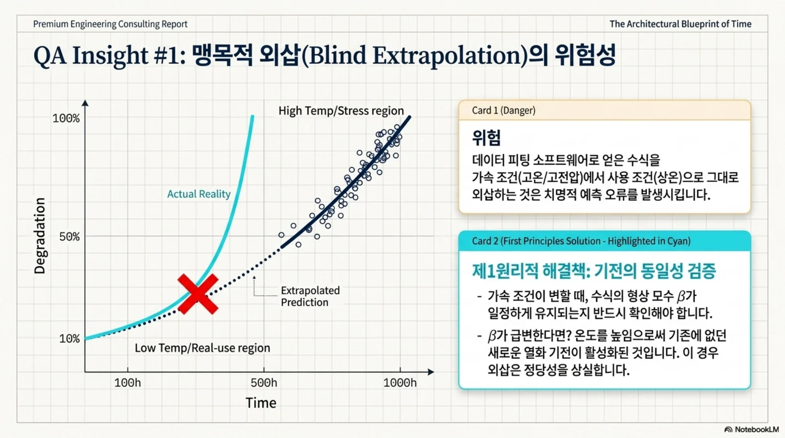
holdout은 신뢰 fit을 제외하지 않고 모델 선택의 보조 기준로 쓴다. in-sample AICc는 좋지만 뒷구간 예측이 나쁜 모델(예: 얕은 데이터에서 double SED 과적합)이 최우선 추천으로 뽑히는 오선택을 막는다.
5. 효율 = 휘도 / 전류 (정규화 전제)
효율 유지율은 구동방식에 무관한 본질적 열화 지표다. PD 휘도 proxy를 전류 proxy(vbat − xvbat)로 나눠 계산한다.
efficiency_retention 샘플과 luminance_fallback 샘플(전류 coverage < 80%)을 같은 수명 분포에 섞어 pooling하면 편향된다.SED 형태는 유지하되 β는 데이터에서, 하한은 물리에서, 선택은 외삽 검증에서 정한다. 하드코딩·in-sample 편향을 걷어내 수명 분포를 더 신뢰할 수 있게 만든 것이 모델검증의 핵심이다.
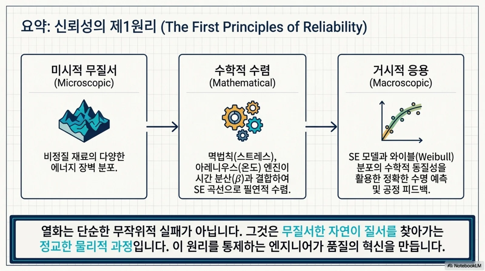
예상 질문과 답변
Q1. 왜 Blue 기준 cutoff를 버리나?
버리는 것이 아니라 기준선으로 유지한다. 다만 White/Red/Green도 overshoot와 열화 시작점이 다를 수 있어 challenger 모델로 편향을 검증한다.
Q2. 자유 파라미터가 많으면 더 좋아 보이지 않나?
in-sample RMSE는 좋아질 수 있지만 외삽 L93는 불안정해질 수 있다. 그래서 CV, AICc/BIC, 외삽비, cutoff 안정성으로 함께 판단한다.
Q3. Red가 L93에 도달하지 않으면 어떻게 하나?
외삽으로 계산하되 외삽비와 경고를 반드시 남긴다. 장수명 데이터는 결과보다 신뢰도 표시가 더 중요하다.
Q4. AI가 수명 판정하나?
아니다. AI/Codex는 반복 분석과 보고서 생성을 돕는다. 모델 선택과 품질 판단은 데이터 근거를 보고 엔지니어가 결정한다.
실제 수명 분석은 사내 사이트에서
여기까지가 수식과 검증 원리입니다. 이제 여러분이 매일 쓰는 도구로 연결합니다. 실제 측정 데이터의 정규화, cutoff 판정, SED 적합과 모델 비교는 아래 사내 도구에서 직접 수행합니다.
사이트에서 확인할 것
- 휘도·전류 proxy·효율 유지율 정규화 결과
- overshoot 구간과 cutoff 적용 지점
- 색상·split별 β와 θ, L93·B10 산출값
- CCS 조건별 \(\Delta V_{TH}\), \(\tau\), \(\beta\) 피팅 비교
- 4-way 모델 비교와 잔차·외삽 검증
사내 링크는 사내망에서만 접속됩니다. 외부 공개 실습에는 익명 예제만 사용하고 회사명, 고객명, Lot·Panel ID와 미공개 수명 데이터는 입력하지 마세요.